<!DOCTYPE html>
<html lang="en">

<head>
  <meta charset="utf-8">
  <meta name="robots" content="index,follow">
  <meta name="description" content="John Schuppe popularized the silver cow creamer in London’s 1760s; other silversmiths followed   ">
  <meta name="keywords" content="silver cow creamers, silver cow creamer,  Schuppe, sterling cow creamer, Hanau silver">

  <title>Silver - Craig's Cow Creamers</title>
  <link rel="stylesheet" type="text/css" href="css1.css">
</head>

<body>
  <table class="maintable">
    <tbody>
      <tr>
        <td id="headerlinks">
          
          <ul id="menu">
            <li><a href="index.html">Home</a></li>
            <li><a href="mystory.html">My Story</a> </li>
            <li><a href="history.html">History</a> </li>
            <li> <a href="care_and_feeding.html">Care and Feeding</a></li>           
            <li><a href="mailto:craig@cow-creamers.net">Email Craig</a></li>
          </ul>
        </td>
      </tr>

      <tr>
        <td width="756" align="right" valign="top">

          <div align="left" id="navcontainer">
            <ul id="navlist">
              <li class="first"><a class="unselected" href="advertising.html">Advertising </a></li>
              <li class="middle"><a class="unselected" href="bennington.html">Bennington </a></li>
              <li class="middle"><a class="unselected" href="christmas.html">Christmas </a></li>
              <li class="middle"><a class="unselected" href="delft.html">Delft </a></li>
              <li class="middle"><a class="unselected" href="favbrands.html">Favorite Brands </a></li>
              <li class="middle"><a class="unselected" href="faience.html">Faience </a></li>
              <li class="middle"><a class="unselected" href="heads.html">Heads </a></li>
              <li class="middle"><a class="unselected" href="jackfield.html">Jackfield </a></li>
              <li class="middle"><a class="unselected" href="miniature.html">Miniature </a></li>
              <li class="middle"><a class="unselected" href="modern_variation.html">Modern Variations </a></li>
              <li class="middle"><a class="unselected" href="pitchers.html">Pitchers </a></li>
              <li class="middle"><a class="unselected" href="places.html">Places </a></li>
              <li class="middle"><a class="unselected" href="rhytons.html">Rhytons </a></li>
              <li class="middle"><a class="selected" href="silver.html">Silver </a></li>
              <li class="middle"><a class="unselected" href="staffordshire.html">Staffordshire </a></li>
              <li class="middle"><a class="unselected" href="sugar_creamers.html">Sugar and Creamers </a></li>
              <li class="middle"><a class="unselected" href="suiteki.html">Suiteki </a></li>
              <li class="middle"><a class="unselected" href="teapots.html">Teapots </a></li>
              <li class="middle"><a class="unselected" href="teasets.html">Tea Sets </a></li>
              <li class="last"><a class="unselected" href="wateringcans.html">Watering Cans </a></li>
            </ul>
          </div>

         
          <h1>Silver</h1>
		  
		  <p> My collection has over a hundred silver cow creamers, ranging in age from two by John Schuppe dated 1764 and 1768, 
		  to a few from the late 20c and early 21c. Silver cow creamers  aren't all that rare, but they are getting quite expensive 
		  so I am very careful about which ones I buy. They seem to remain fairly popular thanks in part to P.G. Wodehouse's 
		  1938 book, <em>The Code of the Woosters</em> and the related 1990s TV serial about Bertie Wooster and his valet Jeeves, 
		  in which the first episode of the second series was <em>Jeeves Saves the Cow-Creamer</em>. I also believe that although my 
		  overall cow creamer collection is one of if not the largest in the world, there are likely several collections of silver
		  cow creamers (and the old Staffordshire cow creamers) that are larger than mine. </p>
		  
          <p>I have a few that I commissioned, although most of these were just made for the 'trade', most probably by working the silver
		  around a mold.  For an introduction to the 
		  traditional method of crafting a cow creamer (now seldom used), by carefully hammering out the body by hand,  view <a href="https://www.youtube.com/watch?v=GHAsvy8LXsg"
              target="_blank">https://www.youtube.com/watch?v=GHAsvy8LXsg</a> from the workshop of master
            silversmith Bruce Russell of Guernsey.  You can find more about him, and the cow he made for me (Snowflake, featured also on the introductory page) , at the
            beginning of the “Other Silver Cow Creamers” area which is about 3/5 of the way down this page.</p>
			
			<p> I also have a number of non-silver metal cow creamers. Siome of these are as well crafted as the real silver cows. 
			They are down near the bottom of page 3 of Modern Variations, albeit this is a misnomer for some of them that are quite old. 
			There are also a number or of other metal cows and bulls and Nandis that are on the Rhytons page. <p>
			
			  <p> <div align="center">As a reminder, click on any thumbnail for a larger picture.</div></p>
			
          <table class="maintable">
		  
            <tr>
              <td colspan="2"> <div align="center"><br>
				<a href="silver/schuppe1.jpg"></a>
				<a href="silver/schuppe2.jpg"></a>
				
                </div>
                <p><a href="silver/05s1hairyettetmarks.JPG"></a><strong>Silver Cow Creamers and John Schuppe</strong><br>
                  From C. Bernhard Hughes’ fine historical accounts in his 1957 book <em>Small Antique Silverware</em>,
                  we learn that “A quaint conceit of the third quarter of the eighteenth century was the milk jug
                  modeled in the form of a cow.  Although the name of John Schuppe” (a Dutch silversmith who moved to
                  London ~1750 and registered his mark there in 1753) “is particularly associated with these jugs there
                  is evidence of hall-marks that David Willaume the younger” (a Hugenot silversmith, 1693-1761) “was
                  making them before Schuppe, who remains an obscure figure, dying in 1773.  Silver cows, as they were
                  listed at the assay office, were made in sections. The sides of the head and body were made
                  separately as were legs and hooves, horns, ears, and the tail handle which looped upward over the
                  haunches. The top of the hollow body was fitted with a curved hinged lid, like a saddle, either plain
                  or bordered with chased flowers and foliage, and with a lifting knob in the form of a large fly
                  modeled in the round. The jug was filled through the lidded opening, the milk being poured into the
                  tea-cup from the animal’s mouth.  Head and body might be tooled to represent the cow’s hair, but
                  others were left smooth-surfaced except for some tool work representing hair between horns and eyes,
                  and along the back bone, this being applied with the intention of concealing joints…Silver cows
                  approximate 4 inches in height; an example by Schuppe sold at Christie’s weighed 4 oz, 15 dwt. In
                  modeling, as in general design, the style is naïve but lively.  Many were gilded and a crest might be
                  engraved on the side of the body.  In some instances the neck was engraved with an inscribed collar.”</p>
				  
                <p>I would like to thank Peter Cameron, a London silversmith (of Vault 57 in the London Silver Vaults)
                  for some additional information about John Schuppe, whom it seems is really quite hard to pin down. 
                  He notes that there were some Schuppes of German origin in London at that time, so the assumption
                  that silversmith Schuppe of the cows was Dutch may indeed be mistaken.   Our elusive silversmith
                  apparently worked in the liberty (an area in which rights reserved to the king had been devolved into
                  private hands) of St Martin’s le Grand (at first in Little Dean's Court and then in New Rents), which
                  is located in the City of London between Newgate Street and Cheapside to the south, and Aldersgate
                  Street to the north.  Mr Cameron stated in an email to me dated May 2012 that “I am pretty clear that
                  John Schuppe, the silversmith, had a wife named Mary and that they had a son, John, who was born in
                  1760 and died in 1823. He was listed as a watchmaker, hardware and toyman in an insurance policy with
                  the Sun Insurance Company in 1804. This last John Schuppe had no children. There were daughters of
                  John, the silversmith, and Mary his wife, as follows: Elizabeth, who married a John Phillips in 1782
                  and had a son named John Schuppe Phillips; Ann christened 1754 of whom no more as yet; and Mary who
                  married Mathew Hodson in 1781 and had various children. John Schuppe, silversmith, was certainly
                  alive quite late in the year 1773 but his wife, Mary, (then living in London Wall), wrote her will in
                  1795 when she described herself as a widow. The only hope of finding more detail is combing through
                  the rate books for the period - if I can find the Schuppes listed in them and if they survive.”  He
                  was also kind enough to pass on the following fascinating clipping from the “Gazetteer and London
                  Daily Advertiser” (London), Monday, February 23, 1756; Issue 4504: </p>
				  
                <div align="center"><a href="silver/schuppesheadaches.jpg"></a> </div>
				<blockquote>	  
                <p> Most of Schuppe’s creamers date from around the 1760’s; he died in 1773.  I have two Schuppe’s in
                  my collection (both acquired from I. Franks Antique Silver in the London Silver Vaults), shown in
                 side,front, top and butt  views, along with their hallmarks: Schuppe’s JS, the lion rampant denoting
                  silver, the leopard head with crown which is the early London assay mark, and the date stamp, here
                  1764 for the smooth creamer (Hairiette) and 1768 for the chased one (Hairy).  </p></blockquote>
				  
                <div align="center">
				<a href="silver/schupe12front.jpg"></a>
				<a href="silver/schuppe12top.jpg"></a>
				 <a href="silver/schuppe12butt.jpg"></a> </div>
					  
					  <p><div align="center">
			    <a href="silver/schuppe1marks.jpg"></a>
				<a href="silver/schuppe2marks.jpg"></a></p>	  
                </div>
				<blockquote>
                <p>The fly on the lid – flies being pervasive around cows and milking (and not as disparaged then as
                  now, I’ve heard) – has become traditional on silver creamers, as you will see on much of the rest of
                  the collection; and the scrawny legs have also carried on through the years; butts, however, are a
                  different story, and  differ widely. Schuppe’s seem somewhat more realistic than many others. </p>
				  
                <p>I’d like to learn more about John Schuppe and about David Willaume II and his creamers as well, if
                  someone can kindly point me to a source.  <a href="http://www.ukauctioneers.com/" target="_blank" rel="nofollow">www.UKauctioneers.com</a>
                  has a very nice glossary (that they attribute to Reader’s Digest’s “Treasures in your Home”) that
                  notes that “David Willaume I (1658-1741) [was a] huguenot silversmith who worked in London using many
                  techniques and designs which were far advanced. His pieces are individualistic … His son David
                  Willaume II (1693 -1761) took over the business in 1716. For a time the two silversmiths were thought
                  to be one and the same”.  There is nothing about Schuppe, however.</p></blockquote>
              </td>
            </tr>

            <tr>
              <td colspan="2"><div align="center"><br>
                  <a href="silver/tbside.jpg"></a>
                  </a>               
                </div>
				<blockquote>  <p> Schuppe’s traditional form remains popular, as these beautiful modern versions attest. 
				One smooth and the other chased, both
                  date from 2002 and thus bear the QEII Jubilee special mark as well as the lion rampant and the 
				  London assay leopard head, plus the maker’s mark “TB” for Timothy Joseph Burtwell of Tring, 				  
				  Hertfordshire who apprenticed with William Comyns. He made the mold, did the pressing and 
				  assembling and had them polished, chased and assayed. These are very close copies of Schuppe's 
				  originals - virtually identical except for the marks. For comparison I show the same 
				  shots as of the originals. I purchased these two lovely cow creamers from Veronica Shaw who
				  named them Daisy and Doris (and from who I later commissioned Bluebell and Dalina, see below.
				  They are now in the hands of my daughter-in-law, chosen as an appropriate gift for the 
				  lovely lady who created this web site.</p></blockquote>
				  <p>
				  <div align="center">
				  <a href="silver/tbfront.jpg">
				  <a href="silver/tbtop.jpg"></.a>
				  <a href="silver/tbbutt.jpg"></a> </div></p>
				  
				  <p><div align="center">
				  <a href="silver/tb1mark.jpg"></a>
				  <a href="silver/tb2mark.jpg">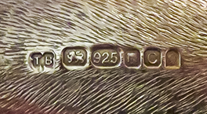</a></div></p>
              </td>
            </tr>
			
			<tr>
			<td colspan="2"><div align="center"><br>
			<a href="silver/at.jpg"></a>
			<a href="silver/atbutt.jpg"></a>
			<a href="silver/atmark.jpg"></a></div>
			<blockquote>
			<p> Here's a fifth Schuppe duplicate, not quite as faithful to the originals as are Tim Burtwells'. This one is by Adans & Tabor, dated 2003.
			It's a bit scunched down in the hindwuarters, and has a distinctly different rear end, albeit still functional.</p>
			</td>
			</tr>
			
			<tr>
			<td colspan="2"><div align="center"><br>
			<a href="silver/schuppefriends.jpg"></a>
			<a href="silver/schuppetops.jpg"></a></div>
			<blockquote>
			<p>Here are all five of the above creamers - will the real Schuppes please raise their right foreleg?</p></blockquote">
			</td>
			</tr>
			
			
			
            <tr>
              <td colspan="2"><div align="center"><br>
				<a href="silver/S87.JPG"></a>
				<a href="silver/sidemarkbutt.jpg"></a>
				<a href="silver/S87marks.jpg" alt="Silver Dutch copy of Schuppe cow creamer"></a>
                </div>
				<blockquote>
                <p>Another Schuppe copy, not that I really needed one … but I was curious about its possible maker
                  and age and it was reasonably priced. The only marks are under the lid – “xxx” in an oval, and two
                 symbols that Ihave been unable to identify but may well be makers marks.  It is Dutch - the three x's are 'saltires' or St Andtrews' crosses, the mark for Amsterdam. They are also featured on the city's coat of arms and fag...although I have been unable to find any explanation for why there are three of them. One distinctive feature that differentiates this well made and likely quite modern cow  from my other Schuppe  copies is the smooth unfunctional rear end.</p></blockquote>
              </td>
            </tr>
			
			 <tr>
              <td>
                <div align="center">
				<a href="silver/s110a.JPG">
                </div>
              </td>
              <td>    <p>This one is silver plate. It's very heavy, and simply marked "Made in England". I got it on eBay with no more information.</p>
              </td>
            </tr>
			
            <tr>
              <td>
                <div align="center"><a href="silver/S89.JPG"></a>
                </div>
              </td>
              <td>    <p>Yet one more, but with a simpler fly, tail hanging in the air and horns pointed forward rather than curled, but with Schuppe-like body, head and leg shape. This one is  unmarked, and of quite heavy silver.  This 'classic' form seems to be extremely popular with silversmiths from both the UK and the continent, up to the present day.  While without marks it’s impossible to give it an age or
                  provenance, I’d guess it to be quite modern, and likely English because of its weight.</p>
              </td>
            </tr>
			
			<tr><td colspan="2"><div align="center"><br>
			<a href="silver/s2s9s81side.jpg"></a>
			<a href="silver/s2s9s81f.jpg"></a>
			<a href="silver/s2s9s81t.jpg"></a></div>
			<p>Here are three essentially identical modern English sterling cow creamers, all presumably from the same 
			mold or copies thereof, by three different makers. Pretty obviously I liked this form of cow creamers,
			albeit I didn’t tumble to the fact that they are triplets until well after I had purchased them.  Eah of
			them bears a somewhat interesting tale, which I relate below shots of their belly marks. They also seems 
			to have marks uon the inside of their lids, but I wasn't able to get a clear shot - I believe they are 
			simply the lion passant standerd and the Elizabeth II leopard head.</p>
			<p>
			<div align="center">
			<a href="silver/s2marks.jpg"></a></div>
			</p>
			<p>This cow came to me from the shop of I. Franks in the London Silver Vaults – one of my first silver ones,
			and the shop here I first learned about Schuppe and sort of got hooked on higher-end cow creamers.  It’s dated
			1958, and bears the marks of S. J. Shrubsole formerly of Market St London, and now E 81st St, NY. 
			Their web site prollaims: “Founded in London in 1912, S.J. Shrubsole opened a New York branch in 1936,
			under the direction of Eric N. Shrubsole. Mr. Shrubsole spent that year driving a black Packard, laden with
			silver and letters of introduction, to virtually every major city in America. By the time he returned a year 
			later, he had laid the foundations for what would become one of America’s finest antique shops.Since then, we
			have worked with some of the world’s greatest collectors, from the serious, such as Irwin Untermyer and H.F. 
			duPont, to the compulsive, such as Arthur Gilbert and William Randolph Hearst, to the compulsively unserious, 
			such as Groucho Marx, who on being told that everything in the shop was antique and English, pointed his c
			igar at our porter and asked “even him?” We handle the greatest pieces in the world: … “ Apparently they are 
			now simply peddlers not makers…</p>
			<p>
			<div align="center">
			<a href="silver/s9marks.jpg"></a></div>
			</p>This second of my triplets, dated 1962 bears the maker’s marks HP over LP, for Herbert and Lawrence 
			Parsons, trading as Tessiers, Ltd. It came to me from the estate of a Yale Univ. family that was originally 
			from Ireland.  A search for the makers turned up considerable information about Tessiers, on silvercollection.it:
			“The firm claims to have been established in 1812, possibly by the descendants of Etienne de Tessier, a 
			Huguenot refugee who arrived in England in 1712, but the first information about the business are in an 1841
			directory listing a Griffin & Tessier, goldsmiths and silversmiths, at 32 South Audley Street. One of 
			the partners was Louis (Lewis) Alexander Tessier (c.1795-after 1861) who in 1851 advertised as Louis Tessier & 
			Sons, active as artists in hair mourning jewellery at 32 Conduit Street and 32 South Audley Street. After 
			the retirement of L.A. Tessier (1857) the business was continued by his sons Henry Thomas Louis Tessier 
			(1816-1891) and Edward Tessier.The partnership, active also at 26 New Bond Street, was dissolved in 1869.H
			.T.L. Tessier continued the business at 32 South Audley Street while Edward Tessier maintained the business at 
			26 New Bond Street. Edward Tessier died in 1875 and the business was sold to John Gotlieu Vander and John
			Hedges who continued the activity under the name of E. Tessier and/or Vander & Hedges.After the dissolution 
			of the partnership with Hedges (1900) Vander continued the activity under the same style until his death (1910). 
			The business Edward Tessier/Vander & Hedges was continued by Arthur Martin Parsons (c.1859-1943) and 
			Frank Herbert Parsons (died 1934) and in 1920 the firm was converted into a limited liability company under 
			the style Tessiers Ltd. The first directors were A.M. Parsons, F.H. Parsons and S.F. Parsons. Herbert Martin 
			Parsons (1892-1981), son of A.M. Parsons, succeeded his father as head of the firm. The firm is now active in 
			a newly established store at 10 Burlington Arcade Piccadilly as dealers in antique and modern jewellery and 
			silver.”  Nothing about Lawrence, but certainly a lot of otherwise good information.</p>
			<p>
			<div align="center">
			<a href="silver/s81marks.jpg"></a></div>
			</p>
			<p>The third of these Schuppe-inspired cows   is marked R.C for Richard Comyns. It bears a London sterling 
			assay mark and is dated 1968.  A search for information about it not only told me quite a bit about the some
			of the transitions in British silversmithing, but revealed that this model (the only one to the best of my 
			knowledge) is currently still in routine production. Here is what I have learned (more than you may wish to know…): first, from Koopermanrareart.com (and others), the Comyns firm “was established by William Comyns c. 1859 when he purchased the business of Robert Tagg, itself said to have been founded about 1730. As yet efforts to trace the latter's lineage have failed; it seems clear, however, that Tagg succeeded John Tapley at 40 Roupell Street, Waterloo Road. Tapley, a manufacturing silversmith, was probably the last of Rundell, Bridge & Co.'s outworkers and is also known to have provided work for Robert Green & Co and Makepeace & Walford. Robert Tagg moved in 1857 to his new residence and manufactory at Carlise Street, Soho Square, where by 1859 he listed as a silversmith. William Comyns, thereafter listed as a silversmith, appears to have purchased the business in 1858 or early 1859, entering his first marks from the first same address. He moved to 1 Percy Mews, Rathbone Place, then to 16 Silver Street, Golden Square Soho, and subsequently to Beak Street, Regent Street. These premises were later expanded to 41, 43, and 45 Beak Street and to 41, 43, 45, 47 Beak Street. Additional premises were taken from c. 1903 at 54 Marshall Street, Soho.</p>
<p>The style of the firm was changed to William Comyns & Son c. 1885 when William Comyn's two sons, Charles Harling Comyns
 and Richard Harling Comyns were admitted to their partnership. William Comyns died in January 1916, and C.H. Comyns 
 while attending a sale in Christie's in 1925. The business was incorporated as limited liability company as William Comyns & Sons Ltd., registered on 20th October 1930, with R.H. Comyns as permanent governing director. Upon the latter's death in 1953, when the firm is said to have lost its former prominence, William Comyns & Sons Ltd was purchased by Bernard Copping.”  From 1957 the firm was located on Tower St London WC2.  Comyns’ original mark apparently was W.C, followed by C&R after William’s death, and then R.C from @1922 to 1984, when Mr. Coping died.  I haven’t yet located any information about the fate of the firm immediately after that point, but a November 22, 2008 article in The Star stated that Comyns was acquired in 1993 by the Malaysia-owned Royal Selangor Group, and around 1998 they moved production to their plant in Wangsa Maju.  The company’s web site – http://comyns-silver.com – notes that their archives contain some 35,000 historical molds, patterns, tools, and drawings, and that they produce both traditional English and European heritage items as well as contemporary ones, with marketing targeted toward Japan, Australia and Singapore as well as Europe, US and UK.</p>
 <p>A response to my query to their Malaysian headquarters about the cow creamer – which can be found via a search on their
 web site and is undoubtedly fashioned from one of their historical molds – states that they trade as Comyns (Malaysia) 
 Sdn Bhd and Comyns of London. The cow creamers being produced today as a ‘standard product’ bear the W.C maker’s mark 
 and (as of late 2015) retails in Malaysia for RM6,500. It seems I got a bargain at £480 for my 1968 version.  Another piece 
 of information I am missing is the date when this particular mold was fashioned. I have seen quite a few Comyns cows for 
 sale, but don’t know when – or by whom – the first was fashioned. I would be delighted if someone could help me correct
 and fill in the holes in this account.</p>			
			</td>
			</tr>
			
			<tr>
              <td colspan="2"><div align="center"><br>
              <a href="silver/s111a.JPG">
			  <a href="silver/s111e.jpg"></a></div>
             <blockquote> 
                <p> I bought a second Tessiers of London cow creanmer a few years after the first, shown above with friends - largely because the
				price was so reasonable. This one is identical to its sister as far as I can tell, but dated 1985 and with an  updated 
				maker's mark that  was registered in 1977.</p>
              </td>
            </tr>
			
			
		
            <tr>
              <td colspan="2"><div align="center"><br>
              <a href="silver/s72Tiffany.jpg"></a>
			  <a href="silver/s72marks.jpg"></a></div>
             <blockquote>
                <p>Here's a fifth cow creamer almost identical to the oes above. This one is marked for Tiffany & Co., England 
				and date-stamped for 1963.  It’s interesting in that it has a gold wash.  Tiffany’s produced a number of
                  creamers of this shape – I’ve even seen one with diamonds in the eyes and anus (of all things), but
                  it was a bit too rich for my taste. Interestingly, both the belly and the lid of this cow bear the
                  lion passant standard and the Elizabeth II lleopard head for the London assay, but there is no maker’s mark. 
                  Tiffany contracted with quite a few silversmiths for their products, and apparently didn’t feel it
                  important to identify them.  To me, it sure looks a lot like the Tessiers, but then so do several others..</p>
              </td>
            </tr>
			
				<tr>
			<td colspan="2"><div align="center"><br>
			<a href="silver/s15.jpg"></a>
			<a href="silver/s15fly.jpg"></a>
			<a href="silver/s15marks.jpg"></a></div>
			<blockquote>
			<p>This one bears a family resemblance to the four above, but with shorter horns and a very fancy fly. It is marked for J.M.Surtees, dated 1998, and I bought it dieectly from him at his shop, Vault 65 in the London Silver Vaults. Deadly places those silver vaults, aty least for the wallet."</p></blockquote>
			</td>
			</tr>
			
			<tr>
			<td colspan="2"> <div align="center"><br>
			<a href="silver/s42s43rt.jpg"></a>
			<a href="silver/s42s43l.jpg"></a>
			<a href="silver/s42s43marks.jpg">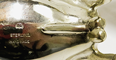</a></div>
			<blockquote>
			<p> The main Schuppe influences here, as with many others, are the legs and the fly on the lid.. This is my only sterling silver sugar and creamer set, and it's prioudly 20c American. The bull sugar bowl whose marks and equipment are shown has an open back, but does indeed
                  have a mouth hole so he qualifies as a creamer even if he’s intended to carry sweets. His lady
                  friend has a lid with a simple aft-facing fly and indented floral decorations. Both of these lovely
                  creamers bear “STERLING, HANDMADE” as well as the Old English “m”, which is the mark of William B.
                  Meyers (1887-1958).  I learned a bit about him from a November 2011 article in Antiques and Auction
                  News which discussed the forthcoming sale of his personal collection of his work, including dollhouse
                  miniatures. That article notes that he “was born in New Brunswick, New Jersey, the first of five
                  children born to a German father and Polish mother, and moved to New York City with his family when
                  he was ten. He exhibited artistic ability as a child, and with the encouragement of his art teacher,
                  he initially considered a career as a designer for a wallpaper company until it was discovered he was
                  color-blind. He also had ambition to be an actor and after graduating in 1907 from City College of
                  New York, he toured the deep South with a dramatic company and developed a vaudeville act. He
                  returned to New York after impassioned entreaties from his family, and upon his return, he began a
                  four-year apprenticeship with a German silversmith in lower Manhattan.”  He became interested in sales
                  as well as design while working for the Wilcox-Roth Company in Newark, New Jersey. In 1913 he bought
                  the company and changed its name the William B. Meyers Company. It remained in business at 50 Columbia Street for over 50
                  years. He initially fashioned reproductions of antiques (which I assume these are) and ceremonial objects for Jewish temples (which these are not).  He started making miniatures for his own pleasure in the late 1920s, and continued doing so as his main line of silver objects 
                  until his wife died in 1947, at which time he focused on religious sterling hollowware.  I have no idea
                  of the date of this pair of his creamers other than they must be from before 1947, but they are
                  extremely well done.
			</td>
			</tr>
					
           
			
            <tr>
              <td colspan="2"> <div align="center"><br>
				<a href="silver/s19left.jpg"></a>
				<a href="silver/s19f.jpg"></a><div>
					  <p><div align="center">
				<a href="silver/s19marks.jpg"></a>
				<a href="silver/s19lidmarks.jpg"></a></p>
                </div>
				<blockquote>
                <p>Going back to the start of the 20c, here is a creamer with Schuppe-like legs and fly, but a very
                  different approach to the head, horns, and stylized smooth udder. The eyes are red, agate presumably, although that doesn't show well.  Most of my silver cow creamers with agate eyes and strange horns are Dutch, but this one is definitely British. It is Hallmarked for Daniel and 
                  John Wellby, London 1902 (hallmark entered 1896). This company was founded in 1827 by Joseph Clement
                  and John Wellby. The business was continued by Daniel and John Wellby at 57 King Street, Soho Square
                  and later at Garrick Street, Covent Garden. The firm was converted in 1896 into a limited liability
                  company under the style of D & J Wellby Ltd.  The hallmarks on the belly appear somewhat worn,
                  but there are similar and clearer ones on the lid. </p></blockquote>               
              </td>
            </tr>
			
            <tr>
              <td colspan="2"><div align="center"><br>
              <a href="silver/S77.JPG"></a>
			  <a href="silver/s77marks.JPG"></a></div>
             <blockquote>              
                <p>Here are two Dutch creamers that I believe are mid to late 19c, albeit I haven’t found date marks on either.
                  Both have the lion passant with a ‘2’ below denoting .833 minimum purity silver (this mark was first
                  used in 1814), and both have traditional Schuppe-like legs. Neither has an export mark, so I assume
                  they were made for the Dutch market.  The one above with the elevated fly, for which I have shown the belly
                  marks that I’ve not been able to identify, has a Minerva head with M (for Schoonhoven) on the lid. 
                  The one below with the curly horns, red (presumably agate) eyes and simple aft-facing fly is a bit unusual
                  in that its head is removable. Its Minerva is sort of hisdden as a flower petal on the lid, and best as I can tell it also bears an "M". Its makers mark, near the lion on the belly, is N2 and I have not been able to identify who that may be using all the available Dutch Makers Marks web sites. </p></blockquote>
				  <div align="center">
				  <a href="silver/S78.JPG"></a>
			 <a href="silver/s78fheadoff.JPG"></a></div>
					  <p> <div align="center">
					  <a href="silver/s78makerlion.jpg">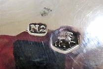</a>
					  <a href="silver/s78minerva.jpg"></a></div></p>
					  <br>
              </td>
            </tr>
			
			<tr>
			<td colspan="2"><div align="center"><br>
			<a href="silver/s96b.jpg"></a>
			<a href="silver/s96d.jpg"></a></div>
			<blockquote>
			<p>This lovely little late 19c cow came to me from Paris, but it's distinctly Dutch which is  immediately apparent from the skinny 
			Schuppe legs and the externded red agate eyes. Thanks to the sharp eyes of the seller I was able to find its marks, which as 
			shown in more detail below are cleverly done.  The rampant lion with "2" below denoting Dutch 833 silver, confirming the c
			oiuntry of origin, is on the belly as normal. But the 1814-1905 version of the Minerva head (I can't read the letter) is 
			located in the center of one of the flowers on the lid. The maker's mark, an "R" over "133" for Cornelius Rietveld of 
			Schoonhaven (1865-1912) is equally cleverly placed in the center of a flower on the other side of the lid. I think I 
			might have miessed these if I hadn't been told where to look. Finally, there is a small mark on the tail which I believe 
			to be the date mark, albeit I have been unable to match it up. The seller said 1870-80 which seems about right given the 
			nature of the Minerva head and the dates that Rietveld was working.  It's great  to be able to have such good information 
			about such a nice older cow.</p></blockquote>
			<div align="center">
			<a href="silver/s96edutch833.jpg"></a>
			<a href="silver/s96g minerva.jpg"></a>
			<a href="silver/r133.jpg"></a>
			<a href="silver/s96hdate.jpg"></a></div><br>
			</td>
			</tr>
			
			<tr>
			<td colspan="2"><div align="center"<br>
			<a href="silver/s98b.jpg"></a>
			<a href="silver/s98eteeth.jpg"></a></div>
			<blockquote>
			<p>Here's a second and quite different Dutch cow by Corneliun Rietveld - or so it seems since it bears the R133 maker's mark and like its friend above, has very small marks in very strange places. Seems Cornelius either had a sense of humor or was a bit of a stinker who wanted not to make it easy fon the assay office. At any rate, here he put the Minerva head on the neck of the removable head, and both the .833 purity lion symbol and his maker's mark (facing in opposite directions) on the neck of the body. Then he put the date mark - which I believe to be 1886, or at least a year from around then when they were using 'interesting' date symbols - on the outside of the knee of the left leg. Thankfully the seller (in Budapest, Hungary) had spotted all of these, because I sure had to search to find the date mark. One thing I really like about this cow is its teeth. I've only seemn such elsewhere on some of Schuppe's; and since he gave this one Schuppe-like legs, he presumably also paid tribute with the teeth.</p></blockquote>
			<div align="center">
			<a href="silver/s98fmarks.jpg"></a>
			<a href="silver/s98date.jpg"></a></div><br>
			</td>
			</tr>
			
			<tr>
			<td colspan="2"><div align="center"><br>
			<a href="silver/s34-1-2.jpg"></a>
			<a href="silver/s34-1-2f.jpg"></a>
			<a href="silver/s34-1-2b.jpg"></a></div>
			<p><div align="center">
			<a href="silver/s34-1marks.jpg"></a>
			<a href="silver/s34-2marks.jpg"></a></div></p>
			<blockquote>
			<p> Continuing with Dutch cow creamers from Schoonhoven, here are two marked for Herbert Hooijkaas. This seems to have been a popular name, both within the Hooijkaas family and elswehere in the country. These cows are quite similar except for size and a few minor markings. The scrawny legs are the main Schuppe-like feature - of note are the smooth butts, missing the anatomical precision of that part of the anatomy in Scupppe's and serveral of the other cows that adopted some of his stule. The larger one on the left is dated 1951 (Q), and the key next to the lion passant indicates it was made for export. The smaller one is dated 1961 (b) and does not have the key so it presumably was made for the local market. The Dutch hallmarking system changed (a bit) in 1953, so the earlier one has a "2" under the lion and the newer one a "II". Both bear the "HH" maker's mark which was used by this family business since it was founded in 1874, albeit with minor changes. This form dates from 1946. A web search turned up a bit of information about both Schoonhoven and the Hooijkaas silver firm:</p>
			<p>Schoonhoven was established in the 13c when a castle was built along the mouth of the river Zevender.  It became an important fortified city by 1330, and despite several fires , revolts, and the short Spanish occupation it prospered. Craft houses for the ‘luxury’ silver and tapestry industries developed a strong economy in the 17th and 18th centuries which seems to have lasted to the present (though with major changes to the nature of the town’s business), and today it is the smallest independent municipality in the Netherlands.  The “Schoonhovensche Zilverfabriek H. Hooijkaas” was established in the center of the town in 1874 and under several generations of the family grew from a small workshop to a factory of some 150 people. Around 1890 the company began to specialize in electrolytic manufacturing of old Dutch silver and by the 1930s it was the most important silver factory in Schoonhoven. A couple of web sites including waxantiques.com noted that “A not inconsiderable part of the company owed its existence to the savings campaigns of the famous Dutch coffee roaster & coffee & tea blender named Douwe Egberts. Among consumers Hooykaas was well known as the supplier of the Douwe Egberts-spoons. Every pack of coffee & tea made by Douwe Egberts, I believe since the late sixties, comes with a point’s coupon. A certain amount of points could be exchanged for coffee cups, silver plated coffee canisters and the famous silver plated spoons with the fancy monogram D.E on it for Douwe Egberts.”  By the late 1960s the demand for fine silver waned, and in 1993 after economic difficulties the company merged into the United Gold and Silver factories Schoonhoven, together with the silver factories Zilverstad and Niekerk.  It finally closed near the end of the millenium, and in 2005 the factory was demolished to make way for  an urban development of 5 types of housing termed “Nieuw Hooijkaas” that seems to be very popular since a check on the web indicated that all the properties had been sold.</p>
			</blockquote>
			</td>
			</tr>
			
			
			
            <tr>
              <td colspan="2"> <div align="center"><br>
				<a href="silver/s18left.jpg"></a>
			<a href="silver/s18f.jpg"></a></div>
			<p><div align="center">
				<a href="silver/s18emarks.jpg"></a>
				<a href="silver/s18lid.jpg"></a></div>
				</p>				
                <blockquote>
                <p>This creamer and the next are also both made for export, but are considerably older.  This one bears
                  a whole lot of city or makers marks that I haven’t been able to identify, but is (most likely)
                  Dutch because there’s a (blurry) Minerva head on the lid. It’s import marked for London in 1891 by
                  Samuel Boyce Landeck of Campden Place.  I need some expert advice on this one, both regarding the
                  multitude of unidentified marks, and because Landeck is said by one web site to not have registered
                  until February 1902 (this may well have been in a different city).  On the other hand, the very reliable Online Encyclopedia of Silver Marks,
                  Hallmarks and Makers Marks notes that Landek was a known importer of Hanau silver, and dates him in
                  London from 1879.  The multitude of marks (pseudo-marks most likely) would imply to me that this cow
                  is from Hanau rather than Holland but again I haven’t been able to identify them.</p></blockquote>
              </td>
            </tr>
			
            <tr>
              <td colspan="2"><div align="center"><br>
				<a href="silver/s35left.jpg"></a>
				<a href="silver/s35f.jpg">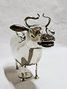</a><div>
				<p><div align="center">	
				<a href="silver/s35marks.jpg"></a>
				<a href="silver/s35lidlion.jpg"></a>
				<a href="silver/s35lidhead.jpg"></a></p>
                </div>
				<blockquote>
                <p>Here  we  have  Samuel Boyce Landeck's  "S.B.L." importer’s mark, different than the "SBL" one on the cow above, and
                 marked for Sheffield, 1899.  It has the Dutch key on the
                  belly and a nice Minerva head as well as the Sheffield lion gardant on the lid, so it’s quite
                  definitely Dutch. There is also a mark on the tail that may be for purity but I can't make it out. Landeck apparently registered his impoprter's  marks in several places - including Chester from what I can discern from a web search, well as  London and Sheffield. </p></blockquote>
              </td>
            </tr>
			
			<tr>
			<td colspan="2"><div align="center"><br>
			<a href="silver/s4s11.jpg"></a></div>
			<blockquote>
			<p> These two German early 20c cow creamers look quite similar but took quite different paths to my collection as quite clearly evidenced bythe marks. The one on the left (and with the marks in the left shot below) was fashioned by Kark Kurz of Kesselstadt, which at that time was a separate municipality but since 1907 became a district of Hanau. This explains the Hanau pseudo-marks. Kurz's studio was founded in 1877, and merged with Gebruder Dingledein (who married Kurz's daugfhter) around 1911.  The British marks are for importer Theodor Hartmann of St Martin's House, 1 Gresham St. later 14 Paternoster Row, who was Kurz's English agent. In addition to the other London marks it shows a date or 1902.  The cow on the right, with the clearly delineated ribs, is German 925 silver marked Sterling and in script Cartier and, I believe, retailed in the US. In addition to the German Halbmund & Krone there are two marks on it I can't identify,  one that looks like a keyhole eith a dot, and the other on the far left that seems to be a company name of some sort.\], perhaps "..son LTD" but that's just a guess</p></blockquote>
			<p><div align="center">
			<a href="silver/s4marks.jpg"></a>
			<a href="silver/s11marks.jpg"></a></div></p><br>
			</td>
			</tr>
			
			<tr>
			<td colspan="2"><div align="center"><br>
			<a href="silver/s12rt.jpg"> </a>
			<a href="silver/s12f.jpg"></a>
			<a href="silver/s12marks.jpg">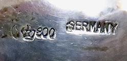</a></div>
			<blockquote>	
			
			<p>This German cow creamer is somewhat similar to the two directly above, but is 800 silver  and has a plain lid. Poor cow, no fly to keep it company. Its marks are simply the Halbmund & Krone, "Germany" and "800"</p></blockquote></td>
			</tr>
			
			<tr>
			<td colspan="2"><div align="center"><br>
			<a href="silver/s10.jpg"></a>
			<a href="silver/s10f.jpg"></a>
			<a href="silver/s10marks.jpg"></a></div>
			<blockquote>
			<p>This lovvely German (Hanau) cow is marked for Georg Roth. From the web we learn that he worked for Hanauer Silberwaren-Manufaktur from 1891 to 1906, and only after that, till 1919 used his own mark for the Georg Roth & Co. I can't make out the details of the other mark, but he was said to specialize in fine copies of antiques and worked in the French roccoco style, and enployed pseudo French marks of that style.</p></blockquote">
			</td>
			</tr>	

            <tr>
              <td>
                <div align="center">
                  <a href="silver/s63.jpg"></a></div>
              </td>
              <td>
                <p>This one also retains some Schuppe influence, and is included because it is a good example of an
                  engraved creamer…in this case, as a present for “Franklin Frazee Moore II, Born July 27, 1963,
                  Christened 11-10-1963”. The seller indicated that he acquired it from the Edgehill Estate of Deal,
                  NJ;
                  it’s marked “Sterling”, thus is either American or made for the US market. I haven’t been able to
                  locate
                  any information on Mr Moore II, but his father and grandfather were both Presidents of Rider College
                  in
                  Lawrenceville, NJ, their consecutive terms lastingfrom 1898-1969. No wonder this apparent family
                  sinecure didn’t last to a third generation, since FFM II was only 6 when his father gave up the
                  post.</p>
              </td>
            </tr>

            <tr>
              <td colspan="2"> <div align="center"><br>
                  <a href="silver/s92.jpg"></a>
                  <a href="silver/s92ml.jpg"></a>
                  <a href="silver/s92mb.jpg"></a></div>
                <p> Here is a sterling silver cow creamer imported to London in 1897 by Elly Issac Miller, registered
                  in 1892 as a plate maker and foreign agent. It is clearly marked F for foreign on both the lid and
                  belly, but there is no indication of where or by whom it was made. I'd be willing to bet that it came
                  from Hanau, but that's only a guess. It has taken a couple dings - the right eye is pushed in rather
                  than protruding, and the tail is somewhat bent. I sense from those minor faults and the condition of
                  the body that looks like it has seen a lot of polishing, that this one has actually experienced
                  considerable use. It came from a family estate from a wealthy area in Southampton, NY, and folks that
                  live there might well have considered this a normal piece of dinner (or breakfast?) ware. At least it
                  makes me happy to think that this lovely piece served as more than a tarnish catcher. It came to me
                  at what I consider a bargain price, since the seller started it reasonably and it turned out I was
                  the only one who showed it a bit of love.</p>
              </td>
            </tr>


            <tr>
              <td colspan="2"><div align="center" ><br>
			  <a href="silver/s79rt.jpg"></a>
			  <a href="silver/s79f.jpg"></a>
			 <a href="silver/s79marks.jpg"></a></div>
             <blockquote>
                <p>Yet one more cow with the Schuppe leg style – in this case, it bears a lot of what I believe to be
                  pseudo-marks, none of which I’ve been able to identify, although it ws sold as 'Netherlands'.   Per usual any help would be greatly
                  appreciated. </p></blockquote>
              </td>
            </tr>
			
			 <tr>
              <td colspan="2"><div align="center" ><br>
			  <a href="silver/s102b.jpg"></a>
			  <a href="silver/s102e.jpg"></a></div>
			<p><div align="center">
			 <a href="silver/s102f.jpg"></a>
			 <a href="silver/s102teeth.jpg"></a>
			 <a href="silver/s102lid.jpg"></a></div>
             <blockquote>
                <p>This one was sold as Dutch @1900. Like the one immediately above it has "Schuppe-like" legs and bears the maker's mark "MG", as well as a supposed date "D" (if Dutch that woukld be 1913) and what I take to be a pseudomark, albeit there is no purity or assay mark so I am left guessing as to maker and provenance. It bears some resemblance to the Dutch one with a removable head by Corneliun Rietveld shown above- somewhat similar though even more elaborate marhings oh the nead and neck, and teeth. It also has "XXII" both on the lid and on the bottom of the right front hoof, adding to the mystery.  </p></blockquote>
              </td>
            </tr>
			
			<tr>
             <td>
                <div align="center">
				<a href="silver/s105a.JPG"></a></div></td>           
          
                <td><p>
                 Here is one from B&Z or Bucholz & Zelt, US importers located (then) at 22 W 48th ST, NY. It's stamped B&Z on the tail along with "Germany"
				 and some indecipherable marks. B&Z sourced most of their silver items from Hanau silvermiths, so although this one does not bear a 
				 maker's mark it is almost certainly from there. It's also almost certainly early 20c, since before B&Z was B&Z it was Otto Bucholz & Co, 
				 as early as 1904...plus it must have been imported before WWI. This is a nice little cow, fairly simple and straightforward, with raised red glass eyes</p>
              </td>
            </tr>
			
            <tr>
              <td colspan="2">
                <div align="center"><br>
				<a href="silver/acquisto.jpg"></a></div>             
             <blockquote>
                <p>
                  Finally for Schuppe-style (sort of - doesn't look like that to me but that's what the maker calls it)), here’s Pete Acquisto’s (of Acquisto Silver of Albuquerque, NM, www.acquistosilver.com)
                  version.  I debated whether to put this here or with the other miniatures, but since it’s his
                  interpretation of a Schuppe (at 1/12 scale of course, as are his other silver pieces) I figured it
                  belonged here. But then I decided that since it’s so tiny, it might as well be in both spots.</p></blockquote>
              </td>
            </tr>
			
            <tr>
              <td colspan="2"><div align="center"><br>
				<a href="silver/kupjack.jpg"></a></div>             
                <p>No, this one isn’t a Schuppe copy, but I decided to put it here (as well as on the miniatures page)
                  because it was attributed by the seller to Acquisto, and it came to her with a lot of other old
                  silver items from a ‘gorgeous Tynietoy mansion”.  There are two stories to tell here – the maker and
                  Tynietoy; as I found out some time later the seller was wrong about the first, but I have no reason
                  to doubt the quality of the collection from which it came.</p>
                <p>This lovely tiny cow (looks like a bull to me but you be the judge) that's here tromping on George was fashioned by Eugene
                  Kupjack, and is his Miniature Dollhouse Silver #353. From his obituary in the NY Times I learned that
                  Kupjack, who died in 1991 at the age of 79, over his lifetime fashioned more than  700 period-style
                  miniature rooms with 1/12 scale doll house furnishings. He is perhaps best known for the 30
                  shadow-box settings that were designed (and funded) by Narcissa Niblack Thorne, widow of a Montgomery
                  Ward & Co heir. These were first displayed at the 1939 Worlds Fair, then donated to the Art
                  Institute of Chicago.  </p>
                <p>For those of you who aren’t dollhouse miniature aficionados, there’s a lot of info on the web about
                  Tynietoy. One good source is the Francis Clay Antiques site, where I learned “Tynietoy was a company
                  started by two talented women, Marion Perkins and Amy Vernon in about 1917 in Providence, Rhode
                  Island. They made miniature replicas of popular furniture designs in the styles representing Early
                  American through to the Victorian era. ...Over the years, or decades rather, leading to approximately
                  WWII the women grew the company to include other employees, craftsmen, and a huge line of miniature
                  furnishings. ...The miniature furniture was initially made independent of display spaces, but
                  eventually Tynietoy began making miniature replicas of New England style houses to sell along with
                  the furnishings.”  These days original Tynietoy houses and furniture make my cows seem inexpensive!</p>
              </td>
            </tr>
			
            <tr>
              <td>
                <div align="center"><a href="silver/p31926theconnisseur.JPG"></a></div>
              </td>
              <td>                
                <p>Apparently in addition to David Willaum the younger and John Schuppe there was a third silversmith cow-maker in London the late 18c: Robert Miller, as indicated by
                  this clipped add for James Robinson’s NY Old English Silver shop, from a 1926 edition of “The
                  Connoisseur”. It’s interesting that Miller’s creamer bear a family resemblance to Schuppe’s…and
                  also, that the Schuppe cow shown here has a heavier chest than do mine. I can find absolutelky nothing about Robert Miller, but Robinson’s is still
                  in business so I naturally asked them for more information, but they replied that it was too many
                  years ago for them to have any knowledge. What a shame. </p>
              </td>
            </tr>
			
			<tr>
			<td colspan="2"><div align="center"><br>
			 <strong> Other Silver Cow-Creamers</strong><div>
			<blockquote>
			<p>As I mentioned in the introduction, I have commissioned a few silver cow creamers, and I will 
			start this area of the page with those.  Then there are a number of silver cow creamers from England,
			Holland, Germany, Italy, and Spain.  Those are followed by a few bulls - even though they aren't noted for 
			their milk-giving ability, there is I guess some rationale for fashioning bull creamers since they are 
			indeed responsible for turning heifers into milk-makers.  Then there are a whole bunch of small or 
			single-serving cow creamers. I assume that these were made so that you could put one at each place 
			when serving a number of guests. And finally, as with other parts of my collection, there are a few that 
			don't quite fit the basic definition but were of interest. </p></blockquote></td>
			</tr>
			
            <tr>              
                <td colspan="2"><br>
				<strong>Commission from Bruce Russell of Guernsey</strong></p>
                <p><strong> Snowflake</strong> Meet Snowflake, crafted for me in early 2016 by master 3rd generation silversmith Bruce Russell of Guernsey in the traditional manner as 
                  shown in his Youtube video that is referenced at the top of this page.  The hand hammered sides of the body, along with one of Bruce’s hammers, are shown here next to the finished creamer.  The
                  information on the card that Bruce included along with the cow tells you a bit about him and his company, and you can learn more at www.bruce-russell.com.  While I normally don’t name my cow
                  creamers (I’d run out of names!) this lovely Guernsey cow automatically became ‘Snowflake’ when Bruce
                  personalized her for me in honor of her joining my family in Alaska.</p>
				<p><div align="center">
				<a href="silver/snowflakeleft.jpg"></a>
				<a href="silver/snowflakeface.jpg"></a>
				<a href="silver/snowflakebody.jpg"></a></div></p>
				<p>
                <div align="center">
				<a href="silver/snowflakemarks.jpg"></a>
				<a href="silver/s82f.jpg"> </a></div></p>
              </td>
            </tr>
			
            <tr>
              <td colspan="2"><br>
                 <strong>Commissions from Veronica Shaw of England</strong></p>	
				
				<p> <strong> Bluebell </strong> I started corresponding with English silversmith Veronica Shaw after I bought one of her Schuppe copies on eBay. After a number of emails, I asked her to design and make a silver cow creamer for me, and left it to her discretion what it would look like.  The result (which she named) was  “Bluebell”, a heavy Modigliani-inspired “Auroch”-like lost-wax cast creamer, standing on a heavily
                  enameled base plate (which also, please note, bears the fly).  The patterning under the enamel is designed to make it look like watered silk, and the cow is heavily chased.  The base is engraved underneath with my wife's and my named, the date of our marriage (25 August 1962), Veronica's signature, and the dates when she worked on it in her studio in a Victorian barn in Hertfordahire from December 2002 to Febroiary 2003. The back end of the base bears her “VJS”
                  (Veronica Jane Shaw) makers mark, the lion rampant, 925 (it’s actually 958, Brittania Silver), the  Leopard Head assay, and the Queens Head special mark for 2002. Bluebell herself was assayed in 2003,
                  and bears simply the maker’s and assay marks. Veronica was also kind enough to send me a painting of her creation.</p>
				
				  <p><div align="center">
				<a href="silver/bluebellleft.jpg"></a>
				<a href="silver/bluebellright.jpg"></a></div></p>
				<p> <div align="center">
				<a href="silver/bluebellbase.jpg"></a>
				<a href="silver/bluebellmarks.jpg"></a></div></p><br>
				  
                <p><strong> Dalina</strong> When I met Veronica during a quick trip to London a year or so later, she showed me a creamer she
                  had made for another patron .  I liked it so much I asked her to make a similar  one for me, and the result is this Dali-inspired Dalina, bearing a Schuppe head and modernistic body with very spiky teats,
                  again on a beautifully enameled silver stand.  Dalina was made between November 2003 and May 2004 and assayed in London in 2004, and enjoys
                  looking at her dangling fly.  The bottom of the base bears her marks as well as an inscription to my wife and myself. Later, my wife and I had the pleasure of hosting Veronica during her trip to the US. </p>
				 
				 <p> <div align="center">
				 <a href="silver/dalnaleft.jpg">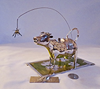</a>
				 <a href="silver/dalinaright.jpg"></a></div></p>
				 <p><div align="center">
				 <a href="silver/dalinamarks.jpg"></a>
				 <a href="silver/dalinafly.jpg"></a></div></p>
              </td>
            </tr>
			
            <tr>
              <td colspan="2"><br>                
                <p><strong>Commission from Arte Magico Andino Joyeria of Cusco Peru</strong></p>
                <p>This large bull is a silver version of a Peruvian ‘Torito de Pucara’. He was crafted for me by
                  virtually every artisan in the shop of this silversmithing company while my wife and I spent 3 days
                  visiting Machu Pichu and the area around Cusco in March 2008.  This magnificent bull also appears in the Peru section of the Places
                  page along with more of an explanation of the Toritos.  This shop had all different kinds of lovely
                  silver jewelry and figures, but they had never before made a Torito de Pucara.  They probably thought
                  I was a bit strange for asking them to make one, but nevertheless willingly complied  (at US
                  $5/gram), went out and purchased a couple ceramic ones for a model, and this is the result.</p>
				  <p><div align="center">
				  <a href="silver/peruleft.jpg"></a>
				  <a href="silver/peruf.jpg"></a>
				  <a href="silver/perumarks.jpg"></a></div></p>		  
              </td>
            </tr>
			
			<tr>
              <td colspan="2"><div align="center"><br>
				<a href="silver/garrardright.jpg""></a>
				<a href="silver/garrardleft.jpg"></a>
				<a href="silver/garrardmarks.jpg"></a></div>
				<blockquote>
				<p> No, this one was not a commission. It's a very heavy and extremely ornate creamer with a very large and detailed fly that was made by
                  Garrard & Co. of London in 1997; it bears their “G&Co.Ltd” hallmark and the lion rampant and
                  leopard-head London assay and date stamp, as well as the Garrard stamp.  This company was founded by silversmith
                  George Wickes (1698-1761) in London in 1735 and underwent several name and partnership changes before
                  becoming Garrard & Co @1802.  Queen Victoria bestowed the honor of Crown Jeweler on Garrard in
                  1843, a responsibility they retained until 2007.  They amalgamated with the Goldsmiths and
                  Silversmiths Co. Ltd in 1952, which was taken over in turn by Mappin & Webb (established in 1797)
                  in 1959. <a href="http://www.antiquesilverspoons.co.uk/" target="_blank" rel="nofollow">www.antiquesilverspoons.co.uk</a>
                  notes that "in the early 60’s Mappin & Webb combined with Walker and Hall and Elkington & Co.
                  and are still active today as retailers under the auspices of British Silverware Ltd.” 
                  Interestingly, Wikipedia has a somewhat different version of their recent history, noting that
                  Garrard demerged in 2002, then was acquired by the US private equity firm Yucaipa Cos. in 2006 (which
                  may explain why they are no longer the crown jewelers…).  Can someone correct or verify all this?? 
                  Oh, the tangled webs of recent M&As!.  Whatever, it’s a lovely cow creamer, albeit a bitch to
                  polish with all those flower and garland nooks and crannies</p>
              </td>
            </tr>
			
			<tr>
              <td colspan="2"><div align="center"><br>
				<a href="silver/s109b.JPG""></a>
				<a href="silver/s109d.JPG"></a>
				<a href="silver/s109e.JPG"></a></div>
				<blockquote>
				<p>This very beautiful and finely crafted modern .835 silver cow is my first (and so far only) one from Poertugal. Per the eBay seller 
				it bears the official Lisbon Assay Office eagle head mark for solid silver .835 (in use after 1985), the name of the jeweler who 
				first sold it, A. P. da Silva» 
			    (located at Praça Luis de Camões n.40 1200-243 Lisbon), and the maker mark for (trademark registered in 1988).
				I have tried in vain to learn more about the silversmith - wpuld greatly aopopreciate more Alberto de Oliveira Matias information (and more cows by him!)</p>
              </td>
            </tr>
			
			<tr>
			<td colspan="2"><div align="center"><br>
			<a href="silver/s101a.jpg"></a>
			<a href="silver/s101b.jpg"></a></div>
			<blockquote>
			<p>For a number of years this unusual but heavy and nicely made cow with a huge fly and an amazing tail  
			was languishing on the Modern Variation page because when it came - very darkly tarnished, accompanied by a 
			pewter cow, and at a surprisingly low price - I though it also was pewter.  But since then I have seem another 
			that was sold as silver by a reputable daler, so I went to work and removed the tarnish and it 
			is now where it belongs, I think.  It has no marks anywhere that I can find, and I have not been able 
			to find any information about it. I suspect it's late 19c or early 20c, and I'd guess European of some sort. 
			It is very unusual and I would greatly appreciate anything anyone might be able to tell me about it.</p></td>
			</tr>
			
			<tr>
			<td colspan="2"><div align="center"><br>
			<a href="silver/s23s25.jpg">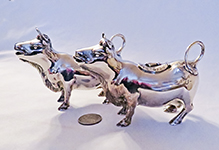</a>
			<a href="silver/s23s25f.jpg"></a></div>
			<blockquote>
			<p>Let's continue this section of the silver collection with two  heavy chested, short legged cow creamers that I believe to be American made. The one on the left bears only a "sterling" mark, and the one on the right bears both that and the name of "Shreve & Co.", as well as a "U-" brand on its left rump. Shreve & Co's web site notes that they "have called San Francisco home since 1852", starting as Shreve Jewelry Company. Then in 1894 they were incoporated as Shreve & Company by George Rodman and Albert J. Lewis. Initially located on Market street, they moved to the corner of Post and Grant in 1906 a month before the earthquake, and their building was one of the few that remained stabnding afterwards. In 1992 they went bankrupt and were acquired by a couple new owners; then in 2015 they lost their lease due to skyrocketing costs around Union Square, and opened a new flagship store a bit further away at 150 Post street. They also have a location in the Stanford Shopping Center in Palo Alto. These creamers are quite heavy, presumably cast.</p></blockquote>
			</td>
			</tr>
			
			<tr>
			<td colspan="2"><div align="center"><br>
			<a href="silver/s41x3s59s93f.jpg"></a>
			<a href="silver/s41x3s59s93t.jpg"></a></div>
			<blockquote>
			<p>This is seemingly a very popular style of silver cow creamer. The two on the left are really duplicates (I screwed up) but the other three all have some different features.</p></blockquote>
			
			<p><div align="center">
			<a href="silver/s41x2.jpg"></a>
			<a href="silver/s41x2marks.jpg"></a></div>
			<blockquote>
			<p>Here are the two identical ones, bought about 9 years apart. Even the marks are the same. Obviously made in Germany and for export, but nothing about the maker. It's puzzled however by the absence of the crescent moon and crown national mark which was compulsory after by 1888, and I believe these to be much newer than that.<p></blockquote>
			
			<p> <div align="center">
			<a href="silver/s41dup2.jpg"></a>
			<a href="silver/s41dup2marks.jpg"></a></div>
				<blockquote>
				<p> This one is very similar, only a bit thinner with less hair on the forehead and a somewhat simpler fly. Per the marks again German made, no indication of maker. I don't understand the significance of the small sword on  German silver, it's usually an assay mark on small items of Dutch silver.</p></blockquote>
				
		    <p> <div align="center">
			<a href="silver/s59new.jpg"></a>
			<a href="silver/s59marks.jpg"></a></div>
			<blockquote>
			<p>This is perhaps the nicest of the five - considerably different features: distinctive eyelashes and hair near the hooves, 
			no pommel on the lid, different body shape, Italian, and marked in script for Cartier. I suppose one should expect the best 
			from Cartier, but it would be nice it they told you who the actual maker was. Cartier has a very nice web site but it doesn't 
			tell you much about them or their history - apparently you are supposed to know that already. But Wikipedia is helpful, reminding 
			us that "CARTIER International SNC, or simply Cartier (/ˈkɑːrtieɪ/; French: [kaʁtje]), is a French luxury goods conglomerate 
			which designs, manufactures, distributes, and sells jewellery and watches.  Founded by Louis-François Cartier in Paris in 1847, 
			the company remained under family control until 1964. The company maintains its headquarters in Paris, although it has been a 
			wholly owned subsidiary of the Swiss Richemont Group. Cartier operates more than 200 stores in 125 countries, with three Temples 
			(Historical Maison) in ondon, New York, and Paris. Cartier is regarded as one of the most prestigious jewellery manufacturers 
			in the world. In 2018, it is ranked by Forbes as the world's 59th most valuable brand. Cartier has a long history of sales to 
			royalty. King Edward VII of Great Britain referred to Cartier as "the jeweller of kings and the king of jewellers." For his 
			coronation in 1902, Edward VII ordered 27 tiaras and issued a royal warrant to Cartier in 1904. Similar warrants soon followed 
			from the courts of Spain, Portugal, Russia, the House of Orleans, and so on." These days, thougfh,. a search for ":cow creamer" turned 
			up only a couple of belts (available for only $440 each...quite a bit to keep your pants up in my opinion)</a></blockquote>
			
			<p><div align="center">
			<a href="silver/s93new.jpg"></a>
			<a href="silver/s93marks.jpg"></a></div>
			<blockquote>
			<p> With such a popular form of cow creamer, one would expect that there would be a version made by the enterprising silversmiths in Hanau - and here's one, likely by Neruresheimer, one of the best who used both a scipt and a capital N, as well as the lion and a bunch of other designs. Basically similar body and head, but fine details and no pommel. Interesting that of the five, it's the only one where a maker applied his own mark.</p></blockquote>			
			</td>
			</tr>
			
			<tr>
			<td colspan="2"><div align="center"><br>
			<a href="silver/s6s73.jpg"></a>
			<a href="silver/s6s73t.jpg"></a></div>
			<blockquote>
			<p>These two are another example of quite similar interpretations executed in quite different ways, one plain and one chased, one with a fly and the other with a pommel on the lid.. Neither provides much in the way of date or maker identification, though both seem to bear unidentifiable marks that may indicate they were made by some Hanau silversmith.</p></blockquote>
			<p><div align="center">
			<a href="silver/s6.jpg"></a>
			<a href="silver/s6marks.jpg"></a></div>
			<blockquote></p> This creamer is heavy and nicely executed but a thorough search revealed only this one blurry mark. It reminds me of one of the marks used by Karl Kurz of Kesselstadt, but isn't anywhere near clear enough for a positive identification. It does seem to have a bit of a history of travel, however - the Portobello Road seller told me that it had belonged to a UK Doctor who thought it was French, and had brought it with him to Australia then back to London. Who knows, he could well have been right and the mark is part of a chubby fleur-de-lis. </p></blockquote>
			<p><div align="center">
			<a href="silver/s73new.jpg"></a>
			<a href="silver/s73m.jpg"></a>
			<a href="silver/s73lid.jpg"></a></div>
			<blockquote><p>This nicely chased cow has clear marks, but still remains a bit of a mystery. It bears a London import mark and the importer's mark for J.R. & Co Ld, the 925 sterling stamp, and  a 1961 date mark, but although I can find an example of that company's mark on the reliable Encyclopedia of Silver Marks, Hallmarks and Marers' Marks, they provide no further information. I did find a 925 and what seems to be a fancy version of an "n" hidden cleverly in a flower in the lid, but have been unable to identify it further. I've only seen marks in a lid flower before on Dutch silver creamers, but those always seem to have a Minerva head and if this cow has one it's well hidden.</p></blockquote>
			</td>
			</tr>
			
			<tr>
			<td colspan="2"> <div align="center"><br>
			<a href="silver/s99left.jpg"></a>
			<a href="silver/s99marks.jpg">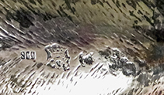</a></div>
			<blockquote>
			<p> This is my least expensive silver cow creamer: $24.99 + shipping. The seller said it was metal without marks -  
			apparently she din't look closely, and it was a "buy it now" on Ebay so I did just that. It took quite a bit of work 
			to remove much of the tarnish, especially since it's 800 silver.  It's quite obviously very similar to the two above - 
			basically ientical to the J.R. & Co. Ltd. chased one except that the lid has a pommel and no fly. I believe the merks 
			are those of Simon Rosenau of Bad Kissingen, 1862-c1932. The 925-1000.com  Hanau marks page provides the following, 
			quoted from one of its members: “Simon (actually Saloman) Rosenau (b1832 d 1920) started in Kissingen in 1862, He also had a branch in 
			Paris. He was first listed as a “Hofantiquar”, roughly supplier of antiques to the royal Bavarian court. His son Herman 
			Simon Rosenau (b 1861 d 1943) took over his father’s business in the 1890s and started selling antique silverware 			
			in the Hauan style. H.S.Rosenah’s ties with the Hanau industry (most notably Schleissner and Neresheimer) were strong 
			and I believe that much of the “old" silver with the Rosenau mark was actually made by Hanau based companies. He retired 
			in 1932. I don’t know what happened to the shop after that. H.S.Rosenau then lived first in Munich , later in Paris , 
			from where he was deported on Ocrober 28, 1943 via Drancy to Auschwitz (22 member – Bahner)”.  I suppose I should feel 
			guilty getting such a nice silver cow creamer for a tenth or less of what it's worth, but then ebay does things like 
			that from time to time.</p></blockquote>
			</td>
			</tr>
			
			<tr>
			<td colspan="2"> <div align="center"><br>
			<a href="silver/s108b.jpg"></a>
			<a href="silver/s108f marks.jpg"></a></div>
			<blockquote>
			<p> Similar (perhapos nearly identical) and more expensive but still a bargain is this other 4x5 1/2" cow marked for  (Herman) Simon 
			Rosenau. of Bad Kissibnger.  Piecing together 
			information from 995-1000.com, silvercollection.eu and a few other web sites, we learn that in his Paris shop Simon  sold antique furniture, 
			bronzes, and tapestries, until he  retired in 1932.  Therefore I strongly suspect that although the cow bears his mark, it was made by one of the 
			other expect Hanau silversmiths, and he simply bought then sold it. The marks indicate that the cow was imported into London by David Bridge 
			where it was assayed and marked (on both belly and lid) , and dated for 1892. Bridge imported other Rosenau pieces, 
			but the date suggests that this one must have been near the start of Simon’s ventures into ‘antique’ Hanau silver.  
			So it would seem we pretty well know who exported and imported it, but not the actual maker. Nor,  or course, do 
			we have any idea what happened to It until I acquired it from a dealer in Fitzwilliam, NH who in turn acquired it 
			from an estate in Jamestown, Rhode Island.. </p></blockquote>
			</td>
			</tr>
			
			<tr>
			<td colspan="2"><div align="center"><br>
			<a href="silver/s26s91.jpg"></a>
			<a href="silver/s26s91t.jpg"></a></div>
			<blockquote>
			<p>Two more closely related cow creamers, again with significant differences such as the collar on one and a fly vs pommel on the lids, but also looking like they may well have been made from very similar molds. They also are impossible for me to trace to maker or date - only a small mark or two near the lid on the one with the collar, and a very distinctive but unintelligibnle mark on the other.</p></blockquote>
			<p><div align="center">
			<a href="silver/s26.jpg"></a>			
			<a href="silver/s26marks1.jpg"></a>
			<a href="silver/s26marks2.jpg"></a></div>
			<blockquote><p> This one came to me from a NY antique dealer that claimed it was Dutch from @1890, but per usual without any really helpful infoprmation. The lid is slightly sprung, and what I show here as 'marks' are indistinguishable. No Miverva head or other indication of country or date, but it may well be as the dealer claimed.  It's a fairly common style; in additiuon to the other cow shown here, I havve come across several others for sale on ebay over the years.</p></blockquote>
			<p><div align="center">
			<a href="silver/s91new.jpg"></a>
			<a href="silver/S91f.JPG"></a></div>
			<blockquote>
			<p>This one is a bit rougher around the mouth than its neighbor, as well as a lot less expensive. Per usual it came with no information. The only marks I can find are those on the tail, and though they are very nicely inscribed they sure don't have any meaning for me. Fanciful, certainly.</p></blockquote>
			</td>
			</tr>
			
			<tr>
			<td colspan="2"> <div align="center"><br>
			<a href="silver/s46s70rt.JPG"></a>
			<a href="silver/s46s70f.JPG"></a></di>
			<blockquote>
			<p>These two Dutch .833 silver cow creamers are nearly identical except for the treatment of the lid, and their date stamps indicate that they were made some 20 years apart. Both predate the change of marks introduced in 1953, so the assay lion has a "2" (vs the more recent "II") and the stype of the swors is that used from 1906-53.</p></blockquote>
			<p><div align="center>
			<a href="silver/s46f.jpg">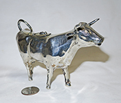</a>
			<a href="silver/s46marks.JPG"></a>
			<a href="silver/s46lid.JPG"></a>
			<a href="silver/s46tail.JPG"></a></div>
			<blockquote> <p> This is the earlier of the two, marked for Zaanlandsee Zilversmederij n.v.b.v., of the family E. Schoorl, godfather G. Schoorl, of Haarlem and the Rokin in Amsterdam, from 1920 to 1990. It bnears the marks for Amsterdam assay (A on the Minerva's head), .833 silver, and 1927. The sword standard used on 'small' pieces to denote .833 silver is on both the lid and the tail. A short writeup at Zaanwiki.nl relates the ups and down of gold and silversmiths in the Zaan region (a district in North Holland in northwestern Netherlands, dotted with windmills in the 17c and a very early industrialized area) and notes that "The Schoorl company at Lagedijk in Zaandijk started making old Zaans silverware. This later created the Zaanlandsche Zilversmederij in Haarlem and on the Rokin in Amsterdam. When the silver price went up after the Second World War and the taste of the public changed, the Zaanlandsche was over. The company carried a beautiful collection of models...   The trend that started in the early 20th century, namely that gold and silversmiths mainly became shopkeepers, continued after the Second World War. The remaining gold and silversmiths in the Zaan region are mainly repairers."</p></blockquote>
			<p><div align="center">
			<a href="silver/s70front.JPG"></a>
			<a href="silver/s70marks.JPG"></a>
			<a href="silver/s70lid.JPG"></a>
			<a href="silver/s70tail.JPG"></a></div>
			<blockquote><p>This second of the two similar Dutch cow creamers was also assayed in Amsterdam, but search as I may I can not find a maker's mark. It's dates 1947 so Zaanlandsee Zilversmederij was still in business but it's sort of surprising that they wouldn't claim it. It does have the 'sword' and assay .833 marks in the same places its cousin, and the Medusa head and assay and date marks are equally crisp so it would be my guess that it came from the same mold and the same maker, the only diference being the lack of a simple fly on the lid.</p></blockquote>			
			</td>
			</tr>
			
			<tr>
			<td colspan="2"><div align="center"><br>
			<a href="silver/s49s.JPG"></a>
			<a href="silver/s49f.JPG"></a>
			<a href="silver/s49marks.JPG"></a></div>
			<blockquote><p> This is a nicely styled and chased cow creamer, quite different from most of my others,  with a very pronounced poimmel and downturned ears. I purchased it from  it from New Orleans Silversmith who claimed it was Dutch circa 1890, and that the "D" stood for Dortrecht. I have come to doubt that attribution, since I can find no reference anywhere for the claim about the D (if that's what it is...), and the other two marks look like Hanau (or other) pseudo marks. On the otherhand, they don't match any Hanau marks I can find, either. At any case it is a nice cow.</p></blockquote> 
			</div>
			</TD>
			</TR>
				
			<tr>
			<td colspan="2"><div align="center"><br>
			<a href="silver/s27side.jpg"></a>
			<a href="silver/s27f.jpg"></a></div>
			<blockquote>
			<p>This is one of my stranger looking silver cow creamers. The seller said it dated from @1890 and was French. I can't make out much from the marks on the left front hoof except for the "800" and have been unable tio identify the maker from the fancy "A" in the hexagon that's both on the lid and on the body nearby. Sort of an interesting interpretation however.
			</p></blockquote>
			<p><div align="center">
			<a href="silver/s27hoof.jpg"></a>
			<a href="silver/s27lid.jpg"></a></div></p>
			</td>
			</tr>
			
            
           <tr>
              <td colspan="2"><div align="center"><br>
				<a href="silver/s76new.jpg"></a>
				<a href="silver/s76f.jpg"></a>
				<a href="silver/s76newmarks.jpg"></a>
				<a href="silver/s76lid.jpg"></a>  
				</div>
                <blockquote>
                <p>This lovely English sterling creamer, bearing the London lion passant and Victoria lion head, was
                  hallmarked in 1899.  I’m by no means sure, but the best I can tell the maker's mark is an "E.D" (I tried I.D. and B.D, neither of which turned up anyone) which implies the maker was Ernest Drew, son of Samuel
                  Summers Drew who founded the firm (better known for leather goods) in 1844.  They first entered a
                  silver mark in 1887 and were located at 33 Piccadilly Circus and 156 Leadenhall Street in London. </p></blockquote>
              </td>
            </tr>

            <tr>
              <td colspan="2">
                <div align="center"><a href="silver/s83s84.jpg"></a><a
                    href="silver/s83e.jpg"></a><a href="silver/s84e.jpg"></a>
                </div>
                <p>These two, which while acquired separately seem to be to be a pair, are also nearly identical to the
                  one above.  They are however, from my reading of the marks, much older.  The smaller of them bears
                  the lion passant an older Minerva head, and the “I” in a circle which the best I can tell is for
                  1843.  The maker’s mark is partially obscured, but I’s guess it to be “HB”.  The larger cow has only
                  the “835” and an illegible maker’s mark.  It’s continental for sure, but whether Dutch, German of
                  whatever I really don’t know.  It is so similar to the one above and the smaller here however that
                  I’d guess Dutch, and again likely 19c.</p>
              </td>
            </tr>
			
			<tr>
			<td colspan="2"><div align="center"><br>
			<a href="silver/s64s14s16s17.jpg"></a>
			<a href="silver/s16s17noses.jpg"></a><div>
			<blockquote>
			<p>Here are four lovely  examples of a very different stype of silver cow creamer, but one that seems to have appealed 
			o silversmiths from at least England and the Netherlands, and over a period of more than a century. It's interesting that three 
			of the four have tongues sticking slightly out of their mouths. Each one is a bit diferent, so lets looks at them individually,
			from left bto right. </p></blockquote>
			<p><div align="center">
			<a href="silver/s64new.jpg"></a>
			<a href="silver/s64marks.jpg"></a>
			<a href="silver/s64lid.jpg"></a></div>
			<blockquote><p> This is the smallest of the four, which I didn't realize until it arrived. It's Dutch, .833 silver made for export (thus the key, used from 1853-1953) amd bears the maker's mark N10 for Gebr. (Brothers) Niekerk of Schoonhoven, thus the M on the Minerva's head. It doesn't have a date stamp, but per silvercollection.it the Niekerks slightly changed their mark over the years, varying the shape of the outline and adding an arrowhead, star or crown from 1944 to 1997. This N10 is plain, and the assay mark bears the "2" so it's for sure prior to 1953, and  I'd guess the maker's mark is an early one, placing this creamer prior to WWII.</p></blockquote>
			<p><div align="center">
			<a href="silver/s14.jpg"></a>
			<a href="silver/s14 marks.jpg"></a></div>
			<blockquote><p>This is the newest, heaviest (360g) and least expensive of the four - marked for Richard Hugh Lawton, 1998, with a London assay.  According to silvermakersmarks.co.uk his mark was registered in London from 1975-1990, and also in Sheffield from 1977-1990. I can't explain the discrepancy in dates, but the mark on the cow is quite definitely the y for 1998.</p></blockquote>
			<p><div align="center">
			<a href="silver/s16.jpg"></a>
			<a href="silver/s16 marks.jpg"></a>
			<a href="silver/s16lid.jpg"></a></div>
			<blockquote><p>Here is a late 19c English version, very lovvely and with heavily indented ribs, hallmarked for Maurice L. Freeman of 26 Clerkenwell Road London, 1898, according to the seller J. Surtees of Vault 65 of the London Silver Vaults. I bought this cow and the ones directly above and below from him, as well as one of his own shown elsewhere; so I accept his attribution, although the marks I have been able to find for Freeman are simply an M.F or MF without the middle initial. Indeed, I haven't been able to find an ecact duplicate of the maker's mark here on any of the normal sites.</p></blockquote>
			<p><div align="center">
			<a href="silver/s17.jpg"></a>
			<a href="silver/s17marks.jpg"></a>
			<a href="silver/s17lid.jpg">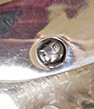</a><div>
			<blockquote><p>Another lovely realistic silver cow creamer from Chancery Lanes' Silver Vault #65, this one was said to be circa 1890. It's for sure Dutch, .833 silver, and fashioned in Groninger per the E on Minerva. The maker's mark is MG, and a Dutch silver search site no longer available indicated that this may be Minne Sjoerds Gaastra. I can't find any other MG from Groningen, so this is as close as I can come to attribution.I'd also note that the two Dutch versions have red eyes, which the British clearly avoid. </p></blockquote>		
			</td>
			<tr>
			
			<tr>
			<td colspan="2"><div align="center"><br>
			<a href="silver/s39rt.jpg"></a>
			<a href="silver/s39l.jpg"></a>
			<a href="silver/s39marks.jpg"></a><div>
			<blockquote>
			<p>This heavy German silver sterling cow creamer bears some similarity to the ones above, but is quite different in many ways. One unique feature (for my collection) is the spout sticking out from its mouth, presumably to ensure smooth pouring. Although the marks would seem to indicate that it was made for export, perhaps to the US, it came to me from Freigericht, Germany."<p>
			</blockquote>
			</td>
			</tr>
           
           <tr>
              <td colspan="2">
                <div align="center"><br>
				<a href="silver/s54left.jpg"></a>
				<a href="silver/s54f.jpg"></a>
				</a><a href="silver/s54marks.jpg"></a>
                </div>
                <p> A knowledgeable seller kindly informed me that although I initially thought this was Dutch, it
                  is actually from Hanau, Germany, by B.Neresheimer & Sohne...Hanau makers used elaborate marks
                  (pseudo marks) to stamp their silver, and here we have both their sctipt 'n' and the Hanau city chevron mark.. </p>
                <p>This is a good place to insert a few words about Hanau and Hanau Silver – derived largely from an
                  extensive write-up on the excellent web site of the Association of Small Collectors of Antique
                  Silver, ASCAS, at <a href="http://www.ascasonline.org/articolo13.html">http://www.ascasonline.org/articolo13.html</a>. 
                  Hanau is in Hesse, Germany, about 25 km east of Frankfurt am Main.  It addition to being the home
                  town of the Brothers Grimm and Franciscus Sylvius, from near the end of the 16c it became a center of
                  precious metal working when the local Count attracted Protestant Walloon refugees from France and the
                  Netherlands who brought their knowledge of jewelry and similar luxury goods with them. According to
                  the ASCAS article, however, the Hanau work in ‘antique silver’ for which it is noted today –
                  masterful copies as well as original pieces, at least for the next several decades – didn’t really
                  begin until the 1860s when the silversmith August Schleissner relocated there after spells in Paris,
                  Germany and the US, then returned to Hanau and with his brother took over the Schleissner company and
                  started a line of antique reproduction silver that because extremely popular with royalty and the
                  rich.  The other leading firm for this type of silverware was Neresheimer, founded in 1890 (and the
                  maker of this and several of my other Hanau creamers).  Like Schleissner, Neresheimer’s workshop
                  produced extremely high quality goods, both reproductions and original pieces.  Much of his work
                  bears the import names or marks for his London agent Berthold Mueller, or Bucholz and Zelt(B&Z) and Tiffany & Co. in the US.  The success of such high quality firms led to a rapid
                  (B&amp;Z) and Tiffany &amp; Co. in the US.  The success of such high quality firms led to a rapid
                  growth in the number of antique silver producers in Hanau starting in the very late 19c, and the
                  resulting frenzied  competition led to a decrease in the quality of workmanship and the introduction
                  of mass produced items , which – together with the Hanau  practice of  using ‘fantasy’ or spurious
                  marks often made to look like the guild marks from pieces that they copied – earned the later Hanau
                  silver a quite dubious reputation.  This cow and the next one down are from Neresheimer and, at least
                  to my eye, are representative of the early very high quality work of that firm.  </p>
              </td>
            </tr>

            <tr>
              <td colspan="2">
                <div align="center"><a href="silver/s69a.jpg"></a><a href="silver/s69e.jpg"></a>
                </div>
                <p>This is another Neresheimer cow, a lovely small example. This firm was noted for the quality of its
                  reproductions.  It’s readily identifiable as theirs by the script ‘n’,  and the chevron pseudomark;
                  chevrons were part of the Hanau crest as well as the older Hanau city mark.  I don’t have any idea
                  about the third mark – the one that looks like a sideways capital “D” – it could be a date mark, but
                  then there were a variety of those in different countries, and I’ve not heard that Neresheimer had
                  its own set.</p>
              </td>
            </tr>
            <tr>
              <td>
                <div align="center"><a href="silver/s58.JPG"></a></div>
              </td>
              <td>
                <p align="left">This is another Hanau cow, stamped German 800 silver, also bearing both the German
                  moon and crown, and the&nbsp; pseudo marks of Johann S. Kurz &amp; Co., active 1870-1960s.
                  The seller states it dates to late 19c or early 20c.</p>
              </td>
            </tr>
			
			
			
			
            <tr>
              <td  colspan="2"><div align="center"><br>
			  <a href="silver/s65s66s67new.jpg">
                     </a></div>
                <p>These three were sold to me as a ‘set’, by a chap who had inherited them from his grandfather who
                  had acquired them on a trip to Germany, presumably in the early 1900s (before WWI).  The pseudo-marks are somewhat similar on all three, indicating that they were indeed from the same silversmith.
                  They are quite definitely from Hanau, although in this case I haven’t been able to identify the maker. 
                  For those with further interest, I can suggest three sources. The first is the Online Encyclopedia of
                  Silver marks, hallmarks, and makers marks,  <a href="http://www.925-1000.com/">www.925-1000.com</a>, 
                  which has a special page devoted to Hauau pseudo marks. Theese marks are the upper left ones in the 'unidentifired' box. The second source, although it doesn't have pictures of specific marks, is articles by Dorothes Bustyn on
                  “The Antique Silver Industry of Hanau”, which can be found on the web site of the Association of
                  Small Collectors of Antique Silver, <a href="http://www.ascasonline.org/">www.ascasonline.org</a>.
                  The third is the section on Hanau hallmarks on the related site, <a href="http://www.silvercollection.it/">www.silvercollection.it</a>. 
                  Quoting briefly from there, “Mark stamping as practiced in Hanau would have been completely illegal
                  in France or England, or for that matter in any other German city where a guild supervised the
                  marking. But Hanau had a long tradition as a free-trade city. With the production of "antique
                  silver", Hanau found a market niche, which brought its silver manufacturers enormous prosperity
                  and worldwide reputation. The 'father' of this industry was August Schleissner. The other leading
                  firm of Hanau was Neresheimer, founded in 1890 as a partnership of August and Ludwig Neresheimer with
                  Jean Schlingloff.”</p>
				  <blockquote>
				  <p>These three are picrured individually with their marks below (the two smaller ones are also included in the 'herd' shot of little cow creamers) :</p></blockquote>
				  <p><div align="center">
				  <a href="silver/s65.jpg"></a>
				  <a href="silver/s65marks.jpg">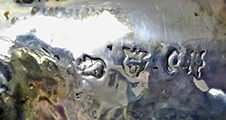</a></div></p>
				  </p></blockquote>
				  <p><div align="center">
				  <a href="silver/s66.jpg"></a>
				  <a href="silver/s66marksnew.jpg"></a></div></p>
				  </p></blockquote>
				  <p><div align="center">
				  <a href="silver/s67.jpg"></a>
				  <a href="silver/s67marks.jpg"></a></div></p>
              </td>
            </tr>
			
            <tr>
              <td colspan="2"><div align="center"><br>
                <<a href="silver/s80side.jpg"></a>
				<a href="silver/s80lid.jpg">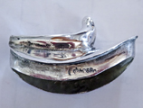</a></div>
              <blockquote>
                <p>This rather fierce looking cow is 
                  cast German 800 silver from ~1890-1900. The small halbund & crone and "800" are on the lid's rim, both sides. No maker's mark however. It comes with the rather wonderful story that it came from the household of
                  Victoria Eugenie of Battenberg (Victoria Eugenie Julia Ena; 24 October 1887 – 15 April 1969) who (per
                  Wikkipedia) “was <a href="https://en.wikipedia.org/wiki/List_of_Spanish_consorts" title="List of Spanish consorts">Queen
                    of Spain</a> from 1906 to 1931 as the wife of <a href="https://en.wikipedia.org/wiki/Alfonso_XIII_of_Spain"
                    title="Alfonso XIII of Spain">King Alfonso XIII</a>. She was a granddaughter of <a href="https://en.wikipedia.org/wiki/Queen_Victoria"
                    title="Queen Victoria">Queen Victoria</a> and the first cousin of <a href="https://en.wikipedia.org/wiki/George_V"
                    title="George V">King George V of the United Kingdom</a>, <a href="https://en.wikipedia.org/wiki/Maud_of_Wales"
                    title="Maud of Wales">Queen Maud of Norway</a>, <a href="https://en.wikipedia.org/wiki/Alexandra_Feodorovna_(Alix_of_Hesse)"
                    title="Alexandra Feodorovna (Alix of Hesse)">Empress Alexandra Feodorovna of Russia</a>, <a href="https://en.wikipedia.org/wiki/Marie_of_Romania"
                    title="Marie of Romania">Queen Marie of Romania</a>, <a href="https://en.wikipedia.org/wiki/Wilhelm_II,_German_Emperor"
                    title="Wilhelm II, German Emperor">Emperor Wilhelm II of Germany</a> and <a href="https://en.wikipedia.org/wiki/Sophia_of_Prussia"
                    title="Sophia of Prussia">Queen Sophia of Greece</a>.”  The seller stated that though he has no
                  written confirmation to back this story up, he believes it to be true because he acquired it “through
                  a friend who recently cleared the house of the Queen's housekeeper…her relative said that she (the
                  housekeeper) was allowed to select a few items to keep when the Queen died in Lausanne, Switzerland
                  in 1969, and that this was one of those items.”  He didn’t advertise the cow this way, but passed
                  this on when I inquired about its provenance – so I believe it too, because I had already bought it
                  and he had no reason to feed me – so to speak – a line of bull. Gee, perhaps I now have a royal cow!
                   It addition to the story, I particularly like this creamer because of its very unusual  shape, and
                  the fact that its lid (with the tip of its tail) lifts off rather than being hinged.  True story or
                  not, the cow is indeed unique and quite lovely..</p>
              </td>
            </tr>
			
			<tr>
			<td colspan="2"><div align="center"><br>
			<a href="silver/zaragoza.jpg"> </a>
			<a href="silver/spanrump.jpg"></a>
			<a href="silver/span.jpg">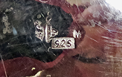</a></div>
			<blockquote>
			<p> This cow creamer is for sure Spanish, with a mark for "Madrid", although neither I nor the seller can identify the maker's mark. I was told that it  came from a family of bankers in Zaragoza.  It's nice and heavy, fairly modern - must be a steer since there's no "equipment' of any sort between the hind legs. Of most interest, there is a large engraved cross over a conjoined BR on the left rump.  The seller checked and indicated that it didn't match any known brands, nor did the bankers have any relationship to cattle, so presumably it is related to a family name  The engraving is nicely and simply done and adds to the cow's beauty as well as the mystery. It is certainly a well made cow creamer and different from all my others.</p></blockquote>
			</td>
			</tr>
			
			
          
            
			
			<tr>
			<td colspan="2"><div align="center"><br>
			<a href="silver/s68w.jpg">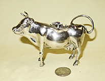</a>
			<a href="silver/s95w.jpg"></a>
			<a href="silver/s68s95.jpg"></a></div>
			<blockquote>
			</p>Here are two more Italian silver cow creamers, and with a bunch of searching I think I was able to track down a bit of information about them. For some of this you might wish to refer to the pictures just below.
			The cows are quite similar - both were fashioned by "Coppini & C." now known as Fratelli Coppini. The one with the jeweled filagree butterfly on the lid is slightly larger than the one with the plain lid.  They both bear "800" marks and a maker's or factory mark, both under the lid and on hind hooves. The mker's mark is a lozenge shape, and although they are hard to read I believe they bear a "7", a fascio or fascist mark, and the letters Fi for Flrenze or Florence. From Giorgio Busetto's marvelous website, "silvercollection.it", "A Small Collection of Antique Silver and Objects of Vertu" we learn that this mark conforms to law n. 305 of 5 February 1934 which introduced uniformity into silversmith's marks.  The numnber designated the factory or maker, and the letters indicate the city. In 1944 the fascist mark was eliminated, and laws of 1968 and 1970 introduced new and diferently shaped marks, although the number and city designation were retained.  The number '7' was registered by Giulio Coppini in 1935.  A couple different Coppini registrations also show up at different addresses, but these cows apparently came from the Giulio Coppini site and must date from between 1935 and 1944.  Fratelli ('Brothers') Coppini is still in business, and their web site dates the roots  of the company to 1740, beginning as a silversmith's shop. They later moved into watchmaking and jewelry, and note that "Ongoing research and careful selection of precious stones, creativity and insight are the key to the success of Fratelli Coppini, which now ranks as an equal among the greatest names of Italian high jewelry". Presumably the butterfly on the larger of my cows attests to the shift to fancy one of a kind pieces.  What follows are images of the butterfly and the lid and hoof marks from the larger cow, then the lid mark from the smaller one.</p></blockquote>
			<div align="center"><br>
			<a href="silver/s68lid.jpg"></a>
			<a href="silver/s68lidmark.jpg"></a>
			<a href="silver/s68hopofmark.jpg"></a>
			<a href="silver/S95e.jpg"></a></div><br>
			</td>
			</tr>
		           
           <tr>
              <td colspan="2"><div align="center"><br>
				<a href="silver/s55sleft.jpg"></a>
				<a href="silver/s55sfront.jpg"></a>
				<a href="silver/s55tail.jpg"></a>
                </div>
				<blockquote>
                <p>These are extremely large  (27cm long, 17cm to top of horms), heavy, and exquisitely crafted German 925 creamers.  I believe they are
                  late 19c, but they certainly date from after 1868 when the Germans standardized the national hallmark
                  to be a crescent moon and crown (Halbmond und Krone).  They bear these and the 925 mark on the tail,
                  as well as a standing lion.  One of them is also stamped for “Germany” presumably meaning it was
                  made for export, and also has the moon and crown and 925 on the bottom of the left front hoof. (I got the one without the Germany stamp directly from Germany – so some of these apparently
                  stayed home).  I’ve searched diligently through the main (and excellent) web sources on German
                  hallmarks -- the “Online Encyclopedia of Silver Marks, Hallmarks and Maker’s Marks”,<a href="http://www.925-1000.com"
                    target="_blank">www.925-1000.com</a>, and “A Small Collection of Antique Silver and Objects of
                  vertu”, <a href="http://www.silvercollection.it" target="_blank">www.silvercollection.it</a>, but
                  can’t find anything that resembles the lion-like makers mark on these. Perhaps some expert can help me.</p></blockquote>
              </td>
            </tr>
			
            <tr>
              <td>
                <div align="center"><a href="silver/s61new.jpg"></a></div>
              </td>
              <td>
                <p>This is another quite large and heavy German creamer marked on the tail with 925 and the Halbmond und Krone, but no
                  makers mark that I can find.  It came straight from Germany so most likely was not made for export.</p>
              </td>
            </tr>

			<tr>
              <td colspan="2"><div align="center"><br>
				<a href="silver/s107w.jpg"></a>
				<a href="silver/s107aw.jpg"></a>			
                </div>
				<blockquote>
                <p>This cow almost looks like the smaller sister of the one above - at 3 1/4" tall she is an inch shorter, and at 5 3/4" long 
				almost 3 inches less. ALthough very well crafted, the poor thing also appears to be emaciated - very thin, ribs showing.  Interestingly small flyless lid. 
				Her left friont hoof is turned up, presumably from some accident. I need take her to a silversmith. She  is stanmped
				on the tail but I can't make out what it says...European for sure but beyond that hard to say.</p></blockquote>
              </td>
            </tr>
			
            <tr>
              <td>
                <div align="center"><a href="silver/s74a.JPG"></a></div>
              </td>
              <td>
                <p>This is an unmarked sterling creamer, said by the seller to most likely be German from around 1890. 
                  <br>
                </p>
              </td>
            </tr>
			
            <tr>
              <td>
                <div align="center"><a href="silver/S86.JPG"></a></div>
              </td>
              <td>
                <p>This cow is also unmarked except for “800” next to a small illegible circle.  I’d guess it’s also
                  likely German, late 19th or early 20c.  It has an interesting fly, with quite large and distinct
                  legs. It also sports relatively large horns and a good sized udder, along with striations on its
                  sides. </p>
              </td>
            </tr>

           
           

           <tr>
			<td colspan="2"><div align="center"><br>
				<a href="silver/s44.jpg"></a>
				<a href="silver/s44lhoof.jpg"></a>
				<a href="silver/s44rthoof.jpg"></a></div>
				<blockquote>
                <p><strong>Bulls too!</strong></p>
                <p>Aparently some bulls give cream if treated properly.  This hefty, hairy, short horned, well endowed
                  chap is 925 German silver, and came to me from Freigericht Germany via eBay.The assay and crown and half moon marks are on the bottom of the left front hoof, and the maker;s mark is very clearly impressed on the bottom of the right front hoof. I believe it is one of the pseudo-marks of Georg Roth & Co. of Hanau...which 925-1000.com notes was Hanauer Silbverwaren Manufaktur from 1891-1906, and Georg Roth & Co. from 1906-1919</p><b;ockquote>
              </td>
            </tr>
			
			<tr>
			<td colspan="2"><div align="center"><br>
		     <a href="silver/s103b.jpg"></a>
			<a href="silver/s103c.jpg"></a></div>	
			<blockquote>
			<p>No mistaking this well equipped and long horned chap for a cow. He is Peruvian silver, said to hve come from the estate of a wealthy New Yorker who had relatives in South America. Per usual, I could get no more specific information on the maker, but he is heavy and nicely fashioned with his fancy saddle and perching bird on the lid.  Down near the bottom of page 3 of Modern Variations, among the metal (not sterling) cows, are a couple somewhat similar in style but less heavy, said to be from Mexico and Persia. Bulls get around. </p></blockquote>
			</td>
			</tr>
			
            <tr>
              <td colspan="2"> <div align="center"><br>
			<a href="silver/s53s52.jpg"></a>
			<a href="silver/s53 marks.jpg"></a>
			<a href="silver/s52marks.jpg"></a></div>
			<blockquote>            
                <p>These two – which I acquired in an on-line auction from Heritage Galleries, are marked on the tail
                  “B&Z, 800, GERMANY”, and a half moon and crown. B&Z = Buchholz & Zelt, 
                  US importers located at 22 W 48th St, New York . An Otto Bucholz & Co  of 1170 Broadway traded as
                  early as 1904, and was still around – advertising in the Jeweler’s Circular – in 1920; I haven’t yet
                  found out when the name changed, or rather when Mr Zelt became a partner and the B&Z firm was
                  established, and whether it was Otto or some other Bucholz that joined with him.  B&Z imported a
                  lot of Hanau silver, much from J.D. Schleissner & Sohne, but there is no mark for them that I can identify.   The McKinley Tariff Act of 1890 required the name of the country of origin to be
                  stamped on imports…and in 1914 this was amended to include the words “Made In”.  My best guess
                  therefore is that these are Hanau silver, certainly imported prior to WWI</p><blockquote>
              </td>
            </tr>

            <tr>
              <td colspan="2"> <div align="center"><br>
			  <a href="silver/s57new.jpg"></a>
			  <a href="silver/s57marks.jpg"></a> </div>
			  <blockquote>
                <p>Here’s another little 800 German silver bull with the
                  post--1866 crescent   moon and crown mark, but
                  interestingly no maker’s mark that I can find. He’s a nice little bull, so I’m not sure  why the maker didn’t want to identify his work. </p></blockquote>
              </td>
            </tr>
			
			<tr>
			<td colspan="2"><div align="center"><br>
			<a href="silver/s100a.jpg"></a>
			<a href="silver/s100b.jpg"></a>
			<a href="silver/s100c.jpg"></a></div>
			<blockquote>
			<p>Not a bull but a steer - German 800 silver per the half moon and crown and purity mark on the right hind hoof. This is my first bull with the tube in the forehead for pouring, needed because  the head is down and it wouldn't be good to dribble on the table from a hole in the mouth. I have read that these bulls with tubes didn't pour well, but I tried this one (with water) and it worked beautifully. Though not large - sort of a one-serving creamer like the herd of little cows below - this little guy is quite heavy and realistically cast and marked. He makes a nice addition to the collection.</p></blockquote>
			<td>
			<tr>


            <tr>
              <td colspan="2">
                <div align="center"> <br>
				<a href="silver/s85b.jpg"></a>
				<a href="silver/s85e.jpg"></a>
				<a href="silver/s85s.jpg"></a></div>
				<blockquote>
                  <p>This quite heavy and striated sterling bull (yes for sure a fully equipped bull) appears to be a British import marked for London,
                    1891.  I believe the ETB importer to be Edwin Thomason Bryant.  I can’t however figure out the
                    maker or country of origin but it's 930 silver and from the blurry marks I'd  guess Gernman Hanau.</p> </blockquote>
              </td>
            </tr>
           
            <tr>
              <td colspan="2">
                <div align="center"></div>
              </td>
            </tr>

            <tr>
              <td colspan="2">
                <div align="center"><br>
				<a href="silver/herdf.jpg">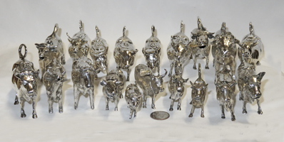</a>
				<a href="silver/herdt.jpg"> </a>
                </div>
                <p><strong>A Herd of Little Silver Cow Creamers</strong></p>
                <p>I’m particularly fond of the small ‘single serving’ (or maybe two servings) creamers, that I assume
                  the host or hostess  would set out at each place at a fancy dinner party.  Here’s an overview of my herd of them - easily enough for  serving 12 guests.  Following are individual  pictures
                  and descriptions of them and their marks.</p>
              </td>
            </tr>
			
			<tr>
			<td colspan="2"><div align="center"><br>
			<a href="silver/s97a.jpg"></a>
			<a href="silver/s97c.jpg"></a>
			<a href="silver/s97e.jpg">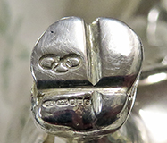</a></div>
			<blockquote>
			<p> Lets start the 'small' silver cow creamer area with a quite new one (too new to have made it into the herd shot), dated "c" for 2002. It's very nicely done, and has an open back and a huge udder. Its marks interestingly are on the bottom of the right front hoof. These include the three linked ovals and the letters LL for Links of London, as well as the modern 925 sterling mark, the now-optional sterling mark and the London assay mark (not easy to read - but then these marks are all extremely tiny). Interestingly and perhaps unfortunately (at least for some 375+employees), Links of London went into "administration" on 9 October 2019, the day after their little cow joined my collection.</p></blockquote>
			</td>
			</tr>
			
            <tr>
              <td colspan="2">
                <div align="center"><br>
				<a href="silver/s50side.jpg"></a>
				<a href="silver/s50top.jpg"></a>
                  <a href="silver/s50marks.jpg"></a></div>                 
				<blockquote>
                  <p>This cute little (3" tall) gal is significantly different from all of the others.  She's Italian -
                    cast 925 sterling from the firm of Giuseppe Belfiore of Florence, which was founded in the late
                    1940s.  She is chased, has polled horns, and a very fancy lid with a forward-facing fly and the
                    hinge on the front end.    I obtained her from New Orleans Silversmiths' Paul Leaman, who stays in
                    touch with Giuseppe's son and daughter who now run the firm. 
                  </p></blockquote>
                    </td>
            </tr>
			
            <tr>
              <td colspan="2"><div align="center"><br>
			  <a href="silver/s24side.jpg"></a><div>
			  <p><div align="center">
			  <a href="silver/s24belly.jpg"></a>			  
			  <a href="silver/s24tail.jpg">
			  </a><a href="silver/s24lid.jpg"></a></div></p>
					<blockquote>
                <p>This stately small steer was sold as French, but I’m not sure.  The markings are very unusual in
                  that they’re spread out… what is most likely the maker’s mark – JR ? – on the tail; what looks to me
                  to be a lion with one paw out in front (back parts blurred) on the belly; and  a sort of fuzzy blob
                  that the seller thought might be a Minerva’s head under the lid.  No fly – so for sure it’s not
                  English, and it must live in a very clean pasture.  I could certainly use some help with this one.</p></blockquote>
              </td>
            </tr>
			
			<tr>
			<td colspan="2"><div align="center" <br>
			<a href="silver/s104a.jpg"></a>
			<a href="silver/s104c.jpg"></a>
			<a href="silver/s104e.jpg"></a></div>
			<blockquote>			
			<p> This  very finely made little cow bears a family resemblance to the one above but she is Dutch, dated 1934, .833 silver, 
			made for export in Amsterdam, by Zaanlandse Ziklversmederije n.v.d.b of Haarlem and on the Rokin in Amsterdfam, 
			who practiced from 1920 until 1990.
			After a bit of searching, 
			from Zaanwiki we learn that ”It is known that during the economic boom of the silversmith trade 
			(late 17th and especially early 18th century) some silversmiths worked in the Zaan region… 
			The general malaise of the second half of the 18th century had major consequences for the gold and silver smithy, 
			the demand for luxury items was only slight. The occupation by the French in 1795 further worsened the situation. 
			The French decided that the guilds should disappear and the archives were destroyed. The surrender of silverware, 
			also made compulsory by the French, in connection with the war tribute to be paid by the Republic, was the death knell
			for most silversmiths… When a slight prosperity returned after 1815, more gold and silversmiths also came to the Zaan region… 
			The company Schoorl on the Lagedijk in Zaandijk started making old Zaan silverware. This later gave rise to the Zaanlandsche 
			Zilversmederij in Haarlem and on the Rokin in Amsterdam. When the silver price went up after the Second World War and the 
			taste of the public changed, the Zaanlandsche was over…”  Nice to be able to identify the maker and learn a bit...
			this cow camne to me from Ontario, Canada - heavens knows how it got there.</p></blockquote>
			</td>
			</tyr>
			
			 <tr>
              <td colspan="2"> <div align="center"><br>
				<a href="silver/s56 side.jpg"></a>
				<a href="silver/s56hoofa.jpg">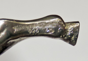</a> </div>
				<blockquote>
                <p>This small but heavy and very well sculpted creamer came from a German collection from which I had obtained anotrher creamer several years later.   It is marked in an
                  unusual place, inside the right rear leg.  In addition to the ‘925’ it bears a maker’s
                    mark of a J, a swan, and a K in an oval, for Johan S. Kurz & Co. of Hanau.  The
                  Encyclopedia of Silver marks says they were active from c1870-1960s, and “worked in the antique
                  style”. </p></blockquote>
              </td>
            </tr>
			
			 <tr>
              <td>
                <div align="center"><a href="silver/S90.JPG"></a>
                </div>
                <div align="center"><a href="silver/s90newmarks.jpg"></a></div>
              </td>
              <td>
                <p>This well shaped (but with a couple small dents) creamer with a large standing bee bears a bit of a resemblance to the one above. It
                  has some interesting marks – they appear to include, in addition to the ‘800’, an
                  Egyptian assay mark, the national ‘cat’ symbol, and an indecipherable date mark. The
                  seller thought he also could find a crescent moon (blurry) as well as the large but
                  unidentified maker’s mark, and thus suggested that it was made in Hanau and imported into
                  Egypt. I will try to do some more searching to see if I can substantiate or change his
                  hypothesis.</p>
              </td>
            </tr>
			
			<tr>
              <td colspan="2" ><div align="center"><br>
			  <a href="silver/S88w.JPG">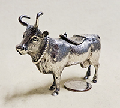</a>
			  <a href="silver/s88lid.jpg"></a></div>
              <blockquote>
                <p>This little lady is extremely well fashioned, nicely chased, with a necklace and
                  a wide lid.  The mark is under the lid, “Germany, 800” and what appears to be a blurry crown and
                  crescent moon.  There’s also a mark that looks a bit like a question mark – if that is what it is,
                  then this cow may well have come from the Hanau shop of  J.D.Schleissner Sohne, which as noted above
                  in the blurb about Hanau was renowned for the quality of its work.  No way to be sure…but I'd like to
                  think that’s where it came from.</p>
              </td>
            </tr>
			
			  <tr>
              <td colspan="2"><div align="center"><br> 			    
				<a href="silver/s51anew.jpg"></a>
				<a href="silver/s51b.jpg"></a></div>
				<blockquote>
                  <p>This roughly cast ‘longhorn’ is marked on the tail, “925, Germany, Sterling”. 
                    It’s from a fairly common mold.  It’s actually a somewhat curious mix – the body shape of a bull,
                    but with an udder and teats. It's missing from the herd shot because it lives in a differenmt part of the country.</p></blockquote>
                </div>
              </td>
            </tr>
			
			<tr>
			<td colspan="2"><div align="center"><br>
			<a href="silver/s20s36.jpg"></a>
			<a href="silver/s20marks.jpg"></a>
			<a href="silver/s36marks.jpg"></a></div>
			<blockquote>
			<p> This is an almost identical pair of somewhat pudgy small silver cows - only slight differences in the pommel, and different marks The one with the belly marks, obvioualy German, came from a compant called 'Britannia' OF Chesterfield, Ohio at the Baltimore Silver show in 2000. The one with the marks on the tail - not at all sure what the one on the right is - came via eBay some 3 years later, and was considerably less expensive. I have to assume that it too is German, perhaps from Hanau.</p></blockquote>
			</td>
			</tr>
			
			<tr>
			<td colspan="2" ><div align="center"><br>
			<a href="silver/sixf.jpg"></a>
			<a href="silver/sixt.jpg"></a></div>
			<blockquote>
			<p>Next come six little single serving cuw creamers, somewhat wimilar to the two above but even slightly smaller and even more similar to eash other.  I'll describe them one at a time, from lkeft to right.  This basic shape and size seems to have been very popular from the number that come up for offer.</p></blockquote>
			</td>
			</tr>
			
			<tr><td colspan="2"><div align="center"><br>
			<a href="silver/s75left.jpg"></a>
			<a href="silver/s75tail.jpg"></a><div>
			<blockquote>
			<p>This is the heftiest of the six similar creamers. Clearly German, 925 sterling - and with what appears to be the half moon, on the tail. Made for export, and with no maker's or importer's mark thus likely sort of 'mass produced' at least as these things go...possibly intended for to the US. I got it from an antique store in Sarasota, FL.</p></blockquiote>
			</td>
			</tr>
			
			<tr>
			<td colspan="2"><div align="center"><br>
			<a href="silver/s5side.jpg"></a>
			<a href="silver/s5belly.jpg"></a></div>
			<blockquote>
			<p>This is the first little silver cow I bought – in August 1997, from I. Franks in the London 
                  Silver Vaults - my first (but by no means last) trip there as I recall. Mr. Franks not only sold me this one - he ssaid it was ‘European’ from
                  around 1890 - but asked me if I'd like to see one of the 'originals' meaning one of the ones made by John Schuppe in the late 1700s.  I was fascinated but didn't immediately decide to spend that much for a silly cow...but then my wife and I went to the Victoria and Albert Museum and saw the Schuppes there, then I did a bit of reading about them and unfortunatekly got hooked, eventiually going back to Mr Franks' vault for my two Schuppes. Mr Franks unknowinglyly has cost me a small fortune and cluttered my home with thousands of these beasts, including now about a hundred silver ones.  The marks on this little gal are interesting - a bunch of grapes and some circular design. Almost certainlly this cow is from Hanau, and although several of the silversmiths there used grapes as one of their pseudomarks I haven;t been able to identify a clear match. </p></blockquote>
              </td>
            </tr>
			
            <tr>
			<td colspan="2"> <div align="center"><br>
			<a href="silver/s13side.jpg"></a>
                  <a href="silver/s13belly.jpg"></a> </div>
				  <blockquote>
                <p>This cow with curly 'goat-like' horns also came from the Silver vaults – the shop of Stephen Kalms Fine Silver Specialists, Vaults 31-32 (dangerous place, the silver
                  vaults…).  He claimed it was German. It’s clearly 800 silver, and the other mark appears to be a
                  different version of a bunch of grapes or some such.  Again no maker's or importer's information, but also probably Hanau since if indeed German it is missing the required marks.</p></blockquote>
              </td>
            </tr>
			
			 <tr>
              <td colspan="2"><div align="center"><br>
				<a href="silver/s21side.jpg"></a>
				<a href="silver/s21tail.jpg"></a> </div>
				<blockquote>
                <p>This German 800 silver cow was imported to the US by
                  Bucholz & Zelt, thus the “B&Z” on the tail.  It would also appear to bear a half-moon and crown, but
                  that’s hard to distinguish and indeed it's more likely to be some Hanau pseudomark since B&Z dealt mostly in Hanau silve (as well as Bohemian glass), much from J.D. Schleissner & Sohne.
                  To  repeat a bit of info about them from the bulls above, B&Z were US importers located at 22 W 48th St, New York . An Otto Bucholz & Co  of 1170 Broadway traded as
                  early as 1904, and was still around – advertising in the Jeweler’s Circular – in 1920; I haven’t 
                  found out when the name changed, or rather when Mr Zelt became a partner and the B&Z firm was
                  established, and whether it was Otto or some other Bucholz that joined with him. </p></blockquote>
              </td>
            </tr>
			
			<tr>
			<td><div align="center">
			<a href="silver/s106a.JPG"></a></div></td>
			<td> <p> Another "B&Z" cow, simpler, but with raised red glass eyes. Cute luttle gal. This one was not 
			in the lineup above - she arrived later,</p[</td>
			</tr>
			
			<tr>
			<td colspan="2"><div align="center"><br>
			<a href="silver/s60side.jpg"></a>
			<a href="silver/s60fly.jpg"></a>
			<a href="silver/s60tail.jpg"></a></div>
			<blockquote>
			<p>This nicely made silver cow  has a fairly wide body compared to many of its similar mates, and sports nor only a pommel but an extremely interesting and delailed engraved fly on the lid. The tail states that it's 925 sterling, and has a couple of whatb look to me like makers marks or pseudomarks.  They are mostly illegible but the left side of the larger one looks to me like it has an "S" over a sword over a "2". I'd like to think that may be for J.D. Schleissner & Sohnne of Hanau since they seem to be about the only ones who used a aword, but I can not find any exact match.
			</blockquote></p>
			</td>
			</tr>
			
            <tr>
              <td colspan="2"><div align="center"><br>
				<a href="silver/s22side.jpg"></a>
				<a href="silver/s22 head.jpg"></a>
                  <a href="silver/s22belly.jpg"></a>
				  <a href="silver/s22lid.jpg"></a></div>
				  <blockquote>
                <p> I got this cow - the last of the six - from a Britannia of Chesterfield, Ohio,
                  through eBay in 2000.  Its markings are a lot of fun…In one direction there’s a “KS” surrounded by
                  three dots for Karl Schatz of Hanau who was active in the 1st
                  quarter of the 20th century (info courtesy of the Online Encyclopedia of Silver Marks…), and 930
                  silver.  The German crown and crescent mark are absent although they were supposed to be compulsory
                  after 1888, presumably because it was made in Hanau and those folks closed their eyes to such silly regulations.  The marks in the other
                  directin show that it was imported into England (the ‘u’ in the circle is the London import mark
                  used since 1906) in 1912 (that’s the “r”)  by “R.L” for Richard Lang of London, registered 1910 and seen on imported items from 1910-1913. Presumably it is considered sterling by the Britsth, thus the 925.  Someone has
                  also scratched “O8W” – or more likely “M&O” into the bottom (not shown).  No idea what that is…  The 925, import mark, and 930 are repeated on the lid.</p></blockquote>
              </td>
            </tr>
			
           	         
			
            <tr>
              <td colspan="2"><div align="center"><br>
                <a href="silver/s40s45front.jpg"></a>
				<a href="silver/s40s45side.jpg"></a></div>
				<p><div align="center">
				<a href="silver/s40marks.jpg"></a>
				<a href="silver/s45marks.jpg"></a></div>
					  <blockquote></p>
                <p>Here are two quite small German 800 creamers imported to the US by Bucholz & Zelt (B&Z)– very similar, but one (on the right and front) with big red eyes and the other with smaller eyes and a thinner heat, but what it lacks in eyes it more than
                  makes up for with teats.  The polishing or some other aspect of the silver also seems different becauise they shine up differently. There are also small variations of the lids.   Both tails are marked “Germany” and "800", although using somewhat different stanmps at least for the "800" (the one on the left brlongs to the cow with the bigger red eyes) and have an indistinguishable
                  blob which is likely the Hanau pseudomark of the makes because that's where B&Z sourced most of their silver. .</p><blockquote>
              </td>
            </tr>
			
            <tr>
              <td>
				<a href="silver/s38side.jpg"></a></td>
				<td>
                <p>This is an interesting very small (2" tall by 3 1/2" long)and well made sterling creamer that the seller, in Germany, indicated was
                  probably from the 1930s.  Its tail bears ta crown and "925" as well as "sterling" and is so well stamped that I didn't need anoter image to show it. I’d guess there was a bell on the loop in the front of the big collar at one time. </p>
              </td>
            </tr>

            <tr>
              <td colspan="2"><div align="center"><br>
                <a href="silver/s29side.jpg"></a>
				<a href="silver/s29rt.jpg"></a>
			    <a href="silver/s29l.jpg"></a></div>
			  <blockquote>
                <p>This very tiny (1 1/2" x 2 1/2") but delightful little guy is a bit of a cheat for the collection since instead of
                  having two holes, his head is on a hinge. He’s so cute however that I couldn’t resist.  I’d guess he
                  was a snuff or pill box.  His marks are interesting since they’re both outside on the neck and on
                  the inside neck rim.  On the right outside the F is the British import mark used from 1867-1904.  The lion passant
                  stands for sterling, and the T=1894.  Inside 
                  is the mark of the importer, "DB" for David Bridge, General Manager of John
                  George Smith && Co., Manufacturers, who imported a lot of silver items, many from Germany although
                  there is no definite indication of origin here.  The import, year and sterling marks are repeated on the left side of the neck rim, along with the London leopard head.  This was obviously a very well made little cow that the importer must have been quite proud of.</p></blockquote>
              </td>
            </tr>
			
            <tr>
              <td colspan="2"> <div align="center"><br>
				<a href="silver/s7side.jpg">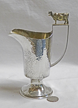</a>
				<a href="silver/s7base.jpg"></a>
                </div>
                <p>My wife bought this lovely hammered silver pitcher for me during a visit to Dublin in 1997.  The
                  marks show a London assay, 1979.  The maker’s mark is HM which, thanks to a reader of my site, I
                  learned is for  Hector Miller (born 1945), an eminent London silversmith who trained at Stuart
                  Devlin's workshop..  I learned from a similar pitcher that later came up for sale on eBay that
                  these were made for the Centenary of the Jersey Cow Society of the UK, which was founded in 1878. 
                  Their web page notes that “Jersey cattle originate from Jersey, the largest Island in the Channel
                  Islands and just some 14 miles away from the French coast. There are fewer than 6000 Jerseys on the
                  Island in total with nearly 4000 of these being adult milking cows. The purity of the breed on the
                  Island is maintained by a strict ban on imports. This ban has been in place for some 150 years. There
                  are no other breeds of the cattle on the Island. The Jersey shares a common ancestry with not only
                  the Guernsey breed but also those cattle found on the Normandy and Brittany coasts. This type of
                  cattle is believed to have originally traveled up across Europe from the Middle East. Jerseys are
                  known to exist in the UK mainland since 1741 and probably well before. At that time they were known
                  as Alderney's .”  The folks that live on the island are rightly proud of their breed and Jersey cow
                  creamers, appropriately labeled but of many styles, are (or at least were) popular souvenirs. You’ll
                  find a small herd of them on the Advertising and Souvenirs page.</p>
              </td>
            </tr>
			
            <tr>
              <td colspan="2"><div align="center"><br>
			  <a href="silver/s62a.jpg"></a>
				<a href="silver/s62b.jpg"></a></div>
				<blockquote>
              <p>
                I almost hate to put this lovely lightly chased creamer on a stand so far down the page, but it is significantly
                different than the others because it’s silver plated rather than solid silver. It’s well marked for the
                maker, George Richmond Collis, who in 1835 took over the firm of Sir Edward Thomason at 28 Churet
                Street, Birmingham. For a bit nore detail, from the marvelous silvercollection.it website we learn that "In 1835 Thomason retired and his manufactory in Church Street was acquired by George Richmond Collis (under the style George Richmond Collis & Co.). Collis & Co continued to produce a wide range of goods, described in an 1839 advertisement as "Articles in the highest classes of the arts, in Gold, Silver, Plated Bronze & Or-Molu....". and in an 1849 advertisement "Manufacturers of Gold and Silver Services of Every Descriptions, Platers by the new process of Electro Plate on fine German Silver &c....". The firm exhibited his production in Birmingham (1849) and London (1851 and 1862) Exhibitions, moving c. 1868 to Cambridge Street, Birmingham. The firm had a London branch at 130 Regent Street and Langham Place, Regent Street (c.1847). The premises in Regent Street were taken over in 1888 by John Bodman Carrington (Carrington & Co). In the same year (31st December 1888) Collis & Co disappeared as a separate concern and was absorbed by S.W. Smith & Co  </p></blockquote>
              </td>
            </tr>
			
            <tr>
              <td colspan="2">
                <div align="center"><br>
				<a href="silver/s62dup1.jpg"></a>
				<a href="silver/s62dup2.jpg"></a></div>
				<blockquote>
                <p>Here is a second George Richmond Collis silver-plated cow, differing from the one above only by
                  slightly different horns and fly.  One thing that makes it interesting is that on the right flank it
                  bears an engraved crown over “GR”.  Of course I’d like to believe that that stands for George Rex, or
                  King George, but then again there are no numbers so even if so it’d be hard to say which one.</p></blockquoite>
              </td>
            </tr>
			
			<tr>
			<td colspan="2"><div align="center"><br>
			<a href="silver/mt10mt11a.jpg"></a>
			<a href="silver/mt10mt11b.jpg">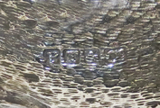</a></div>
			<blockquote>
			<p> From the same era of the last half of the 19c, here are two more silverplated cow creamers, bearing a close resemblance to the ones from Collins & Co.  One of these bears the mark "PT&Co", which stands for Pryor Tyzack & Company of Sheffield. This company was initially Pryor, John & Sons of 118 Rockingham St according to a commercial list for the area. It's undlear exactly when it changed, but from slivercollection.it we find that Pryor Tyzack & Co. was active at Gravville St in 1860-61, then at 80 Division St 1862-3, known predominantly for high quality silver plated table ware. In 1863 the company changed to become Beame Pryor & Tyzack, so we can pretty well nail down when these two were made.</p></blockquote>
			</td>
			</tr>			
			
            <tr>
              <td><a href="silver/Mt32.JPG"></a></td>
              <td>Finally, here is another but much more modern silver-plated creamer, quite heavy, and chased to resemble hair except for the lid. It
                has thin Schuppe-like legs, and the teats appear to be simply little pieces of wire. It has no markings
                and thus I have no real information on when and where it was made. However it came to me from Buenos
                Aires, Argentina (shortly after my wife and I had visited there) and the seller could only say that he
                acquired it from the estate of a wealthy collector and that he estimated it to date from the 1920’s or
                30’s.</td>
            </tr>
          </table>
        </td>
      </tr>
    </tbody>
  </table>
  <div id="footer">

    <div align="center">Contact: craig@cow-creamers.net

      <div>Copyright © 2025 Craig's Cow Creamers <br>
        webmaster@cow-creamers.net
        <br>
      </div>
    </div>
  </div>


</body>

</html>
